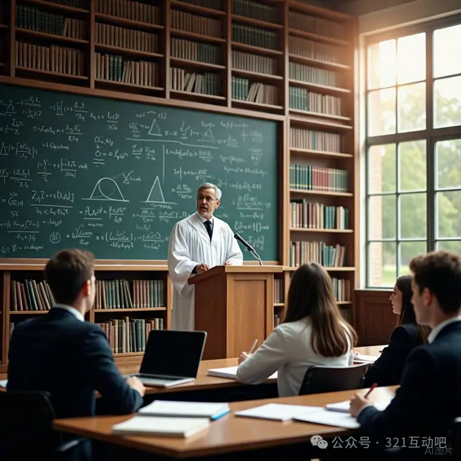

婚姻不是契约，而是主客互动中意义的生成系统
摘要
在现代社会，婚姻正在经历一场深层次的信任危机与结构性塌陷：人们不再轻易进入婚姻，迅速离婚已成常态，越来越多的伴侣则陷入“组合式”关系，貌合神离，彼此成为制度性共处者。这场危机表面看是道德瓦解、责任缺失，实则根源于文明哲学基础的坍塌——我们已经无法用“价值”（真善美）来维系婚姻的意义。因为价值观的快速变动和多元裂解，使得婚姻失去了稳定结构。在此基础上，本文提出一个根本性的转向：必须从“发生学”的角度，重构婚姻的本体与智慧，把婚姻看作一个“主–客–互动”（SIO）结构持续生成意义的生命节奏系统。
传统婚姻观建立在主客二分、性别对立、道德训诫和社会契约的基础上。然而在SIO本体论中，存在不是主体或客体的本身，而是他们在互动中的整体生成结构。婚姻的真义，不是“找到对的人”，也不是“履行契约”，而是不断生成、调适、重构一种互动的节奏结构。本文主张用特征律、自由律、幸福律三律发生结构重新定义婚姻，揭示其动态本质。
特征律告诉我们：婚姻不是静态的标签或角色分工，而是彼此之间主客互动所生成的“节奏结构”。我们所谓的“性格不合”“三观不同”“沟通障碍”，本质上是节奏的不协调，是互动特征未能共鸣。
自由律则指出：婚姻必须容许互动模式的变化，否则必将僵化为形式、窒息为习惯。真正自由的婚姻，是互动结构中拥有转换空间的婚姻，是允许节奏改变、角色变换、意义再生的系统。
幸福律最终提示我们：幸福不是婚姻的礼物，而是婚姻互动张力中释放出的生成性体验。只有当婚姻能在冲突、忍耐与节奏重组中完成意义的转化，幸福才不再是幻象，而成为现实中的“意义涌现”。
因此，本文将婚姻重新定义为：一个主客互动（SIO）不断循环生成的节奏性意义结构。婚姻不是制度，也不是情感归属，更不是道德修炼场。婚姻是一个张力生成→节奏组织→意义涌现的互动发生系统，每一对伴侣，都是两个主体试图共同维系某种节奏张力的建构者。
我们将在文中剖析婚姻的六大认知幻觉，指出其根源在于将婚姻物化为客体、工具或结果；继而引入婚姻三态模型——冥想态、在场态、登场态——指出婚姻需要在这三种状态之间转换与循环，方可维持意义流动；进一步，提出“婚姻智慧”的定义不在于“维系不变”，而在于能否识别张力、忍耐张力、并完成互动模式的再生成。
在这个意义上，婚姻不再是“浪漫的终点”，而是“意义的实验场”；不是“稳定的避风港”，而是“节奏的再生室”；不是“寻找完整的他者”，而是“共同完成一个整体结构”。唯有在发生的路径中，婚姻才能真正超越契约、制度与情感幻象，成为人类最深刻的意义生成系统之一。
这是本文的核心命题：婚姻是两个主体在张力中共生，在互动中生成意义的生命节奏结构。当我们从发生学的角度重新理解婚姻，不是为了回归传统，不是为了革命破坏，而是为了找到一种新的结构性智慧，让婚姻不再是道德的束缚，而是自由、幸福与创造真正发生的场域。
引言：当婚姻不再是爱的港湾，而是意义的旷野
“他们从此幸福地生活在一起。”
这是童话结尾，却是婚姻悲剧的开始。
在今日世界，“婚姻”这一人类最古老的关系制度，正以前所未有的速度崩解。从不婚主义、闪婚闪离，到组合式伴侣、开放关系的兴起，无不在表明一个结构性真相：婚姻作为文明意义系统的一种组织形式，已濒临失效。
但我们不能止步于社会学、心理学或伦理学的解释。因为它们的语境仍然预设了一个静态的“婚姻客体”——仿佛婚姻是一件可以设计、维护、优化的产品。而事实上，婚姻从来都不是一个客体，而是一个动态的主客互动结构（SIO）：两个生命体在张力中交织、节奏中生成、意义中呼吸的节奏结构。
我们正在进入一个“意义重建的时代”。价值（真善美）的普遍性瓦解，传统婚姻赖以维系的伦理框架（责任、忠诚、牺牲）在个体自由与多元价值面前失效。人们开始追问：婚姻还有必要吗？爱情无法维持婚姻，那婚姻又为何需要存在？
这正是本文要回答的问题：婚姻是否还有存在的哲学可能性？如果有，它必须如何发生？
一、婚姻的三重崩解：不愿进、进不久、留不下
今天的婚姻，呈现出三种普遍而深刻的危机状态：
1. 不愿进入婚姻：年轻人不结婚，晚婚、丁克、不婚成为潮流。这不是对爱失望，而是对婚姻结构本身的不信任。他们害怕婚姻会吞噬自由、压制创造、制造疲惫。他们敏锐地意识到：婚姻不再是爱的容器，而成了意义的坟墓。
2. 进入后迅速崩溃：越来越多的婚姻如流星般划过——明亮、激烈、转瞬即逝。表面是“性格不合”“沟通失败”，实则是互动张力失控、节奏错乱、意义流失。
3. 留在婚姻中，却形如组合：许多夫妻表面稳定，实质早已分裂。他们维持着共同生活、财产和身份，却早已停止互动生成。他们的关系是制度组合，而非生命共生；是协商而非共振，是妥协而非创造。
这三种状态背后有一个共同的问题：我们用来理解和维持婚姻的范式已经老化、瓦解。
二、传统婚姻观的幻觉：从道德化到客体化
人类对婚姻的理解，长期受限于三种幻觉：
1. 道德幻觉：将婚姻当作责任的祭坛，把忠诚、牺牲、包容奉为圭臬。于是婚姻变成了对个体欲望的压抑机制，成为“自我消耗式文明”的象征。
2. 浪漫幻觉：将婚姻当作爱情的终点，误以为情感高峰可以维系日常互动。于是，当激情褪去，剩下的只是一地鸡毛与互相指责。
3. 客体幻觉：将婚姻当作一种“可设计”“可规划”的客体，把它结构化为“契约、权责、角色”系统。但婚姻并非静态对象，而是两个生命体之间张力生成的流动节奏。
这些幻觉本质上是本体论的错误。传统婚姻观预设了“主体-客体”的分裂结构，误以为可以通过规则、理性、仪式，来建立一种持久的关系。但婚姻不是规则的产物，而是互动的生成；不是某种“已经存在的合约”，而是时时发生的生命节奏共鸣。
三、主客互动本体论（SIO）：重新理解婚姻的存在方式
在“主客互动本体论”（SIO）视角中，一切存在都不是独立的主体（S）或客体（O），而是主体–互动–客体三者共构的复合结构（S–I–O）。这种结构不是静止的，而是动态生成的。每一段关系，每一种制度，每一种文明组织形式，都是特定的SIO节奏。
在这个结构中：
主体（S）不是“我”，而是我在关系中的表现与位置；
客体（O）不是“对方”，而是我所投射与回应的那部分互动对象；
互动（I）不是单向的交流，而是张力结构在时间中的动态运行。
婚姻不是某种“主体遇到合适的客体”，而是双方在张力中生成出一种节奏系统。换言之，婚姻是一个结构性“发生”，不是实体性“拥有”。
四、婚姻的三律结构：从意义维度重建婚姻智慧
在主客互动本体论的基础上，我们引入“发生三律”来理解婚姻的生成逻辑：
1. 特征律：婚姻是某种特定互动特征的涌现结构。婚姻是否成立，不取决于法律或情感，而在于是否形成了可重复、可稳定、可反馈的节奏性互动模式。
2. 自由律：婚姻不是压制自由的机制，而是生成更高层级互动自由度的系统。婚姻的失败往往来自互动模式的僵化，缺乏转换力。
3. 幸福律：幸福不是静态状态，而是在互动张力释放中的生成体验。婚姻中的幸福来自于冲突的节奏转化，来自意义的再生。
在这个意义上，婚姻不是某种“目的地”，而是“持续生成意义的节奏系统”。只有不断识别张力、调节节奏、生成新的互动结构，婚姻才能生生不息。
五、婚姻不是归宿，而是实验场
当我们说“婚姻是智慧的产物”，并不意味着技巧或妥协，而是指：
婚姻的智慧，是在关系张力中生成新的SIO结构的能力。
这种智慧要求：
忍耐张力，而不是逃避冲突；
识别节奏，而不是追求统一性；
生成结构，而不是复制模板；
创造意义，而不是履行职责。
真正的婚姻，不是两人走向“稳定”，而是两人共同成为一个可再生、可创造、可转化的节奏系统——这才是人类关系文明的高级形态。
六、写作目的：从本体论重建婚姻的可能性
本书的写作不是为了提供婚姻指南，不是为了挽救传统制度，更不是为了解释爱情的失败。我们真正要做的，是进行一次婚姻结构的本体论重建：
将婚姻从“制度”还原为“发生”；
将婚姻从“角色扮演”还原为“节奏共生”；
将婚姻从“伦理模型”还原为“意义系统”；
将婚姻从“稳定结构”转化为“生成结构”；
这是一场思想上的革命，也是一场文明的过渡。我们不再用“找一个对的人”来解释婚姻，而是意识到：婚姻本身就是“共生生成意义的实验结构”。
只有理解了这一点，我们才能真正走出婚姻的幻觉，进入婚姻的发生——从而让婚姻重新成为文明中的希望之地。
第一编章：婚姻基础理论
第一章：婚姻的存在幻觉：
六大结构性误解的哲学解构
——我们不是失败于婚姻，而是失败于对婚姻的理解
“不是婚姻失败了，而是我们对婚姻的理解，从一开始就是幻觉。”
进入21世纪后，婚姻制度所遭遇的危机不仅表现在离婚率的节节攀升、不婚现象的迅速扩散，更深层地体现在人们对婚姻的认知结构已经彻底坍塌。传统意义上的“爱与责任”“家庭与归属”“承诺与牺牲”这些婚姻话语，正在快速丧失其解释力与现实维系能力。
但真正的问题不是婚姻本身出了错，而是我们以错误的本体论、伦理学与认知范式去理解婚姻，使得婚姻沦为幻象和负担。唯有从主客互动的发生学结构（SIO）出发，逐一解构这些深埋在人类文化意识底层的误解，我们才能重新理解婚姻的存在方式，为新的婚姻智慧奠定基础。
本章将系统性揭示六大根深蒂固的婚姻幻觉，并在每一部分导入SIO本体论的结构性分析，形成一次深刻的认知革命。
一、幻觉一：把婚姻当作“完成的合约”，而非“生成的节奏”
现代人普遍将婚姻视作一纸契约，一旦签订，即完成“归属的转移”，并预设一整套责任义务、角色分配与生活安排。这种认知源自工业时代的逻辑，将婚姻制度纳入“制度性秩序”——即通过法律、伦理与契约来稳定社会结构。
然而，这种把婚姻等同于“稳定合约”的观点，本质上是将婚姻客体化了。它隐含着一种静态本体论：认为“婚姻”是一种独立于人之上的存在，可以设计、归类、签订、固化。从主客互动本体论（SIO）看，这种思维完全忽视了婚姻作为一种主—客—互动复合体的存在真相：婚姻不是签署的那一刻开始的，而是在每一个互动节奏中，持续地发生、变形、更新。一旦婚姻不再发生互动，合约的字面意义便毫无价值。
真正的婚姻，不是制度合约，而是一段节奏的生成过程。合约只是制度化的外壳，婚姻的本质在于两人如何持续生成具有张力与共鸣的SIO结构——这是婚姻是否“存在”的唯一标准。
二、幻觉二：把爱情当作婚姻的“前置条件”，而非“交互生成物”
主流文化教导我们：先有爱情，后有婚姻。爱情是“火”，婚姻是“柴”。只要有足够的爱情，婚姻便能燃烧不息。
这种模式将爱情视为婚姻的“燃料”，于是人们对婚姻失败的第一反应常是：“我们不再相爱了。”然而，大多数婚姻的崩解，并非因为没有爱，而是因为缺乏互动生成机制。爱情不是“在婚姻外”完成后再带入的情感资源，而是在婚姻互动中被持续生成的结果。
从SIO视角看，爱情不过是主客互动节奏的一种结果性情感状态。它源于对彼此主客反应的感知与投射，是互动中形成的结构性张力的体验反应。如果缺乏新的互动，爱情自然会沉寂；但反过来，创造新的SIO互动节奏，也能重新生成爱情。
因此，爱情不是婚姻的前提，而是婚姻的“副产品”。将爱情绝对化，只会制造“激情幻灭”之后的虚无，而误以为婚姻无以为继。真正智慧的婚姻，是能持续生成爱情——哪怕以不同形态显现：默契、牵挂、深情、敬意、幽默、协作……
三、幻觉三：把“角色分工”误认为“结构基础”
人类社会长期以来将婚姻建立在性别角色的基础上——男性负责经济，女性负责家庭；一个负责“外”，一个负责“内”。尽管今天这种结构已逐渐崩解，但角色分工仍是许多人维持婚姻结构的默认逻辑。
问题在于，一旦分工被打破（如女性经济独立、男性参与育儿），旧结构便失去“稳定支点”，婚姻便易于失衡。
这种结构性幻觉背后，是对“结构”与“功能”的混淆。角色分工并不是结构本身，而是互动节奏的某种历史性表现。真正的结构，是二人之间的主客互动关系网，是张力如何产生、节奏如何运行、意义如何生成。
换言之，一个婚姻是否健康，不取决于谁做饭、谁赚钱，而取决于彼此之间是否能通过互动完成结构的协同生成。当互动张力丧失，即使分工明确，婚姻也早已失去生命力。
四、幻觉四：把“牺牲与包容”误当婚姻的核心价值
“婚姻就是牺牲与包容。”这句口号深入人心，尤其在东方文化中，常被视作婚姻的核心道德训诫。许多“忍辱负重”的婚姻维系者也确实以此为心理支撑。
但这种“牺牲逻辑”建立在一种严重的本体论错误上：它预设了婚姻是一个为对方而压抑自我的伦理修炼场。而压抑的后果往往是积怨、断裂、爆炸。
SIO结构告诉我们：婚姻不是为了“牺牲某一个主体”，而是为了创造一个新的复合整体。在这个整体中，双方既是S（主体），也是O（对方的客体），也是I（相互建构的互动过程）。
真正的婚姻价值，不在于“包容对方的缺点”，而在于允许并创造一个能够转化缺点、释放张力的结构系统。牺牲与包容，只是在某些张力节点中的“短暂策略”，不是长期智慧。
婚姻需要的不是“善良”，而是结构生成的能力——将冲突转化为创造，将分歧转化为节奏，将张力转化为意义。
五、幻觉五：把“稳定”当作婚姻的最终目标
大多数人对婚姻最大的期待是“稳定”。稳定的情绪、生活、经济、家庭氛围。但稳定不是目的，而是过程中的副产物。
当“稳定”被当作唯一目标，人们会选择压制变化、恐惧冲突、拒绝重新生成结构——这正是婚姻死寂的根源。
婚姻是一个生命系统。任何生命系统都遵循动态节奏律。结构—张力—转化—再结构，是婚姻生长的必经路径。如果一味追求“稳定”，实际上就是在追求“静止”——那是一种结构死亡。
SIO哲学指出，婚姻的真正目标，不是外部的稳定，而是内部节奏的可再生性。婚姻的健康标志不是“没有问题”，而是“能够处理任何问题”。换句话说，不是“无波澜”，而是“有能力起伏”。
六、幻觉六：把“孩子、房子、身份”当作婚姻的维系物
许多人维系婚姻的理由是孩子、房子、经济、安全感、社会身份。虽然这些元素都与婚姻结构紧密相关，但它们不是维系婚姻的本体，而是互动系统的派生物。
当婚姻被物化为“孩子”“房子”“家族体系”“朋友圈关系网”，人们所守护的已不再是彼此的关系节奏，而是一种“社会客体”的象征系统。
这本质上是将婚姻从“主客互动复合体”降格为“身份结构的保护壳”，从而丧失了最重要的——在关系中共同生成新意义的能力。
孩子不能拯救婚姻，房子不能稳固情感，身份不能替代节奏。真正维系婚姻的，是两人在节奏中持续互动所产生的彼此成为他者的生成关系——这就是主客互动的本体之道。
结语：从“婚姻是什么”到“婚姻如何发生”
以上六大幻觉，构成了当代婚姻困境的思想根基。它们之所以成为幻觉，并非因为它们完全错误，而是因为它们是在错误本体论之下的局部经验被整体化、绝对化。
我们在这些幻觉中苦苦挣扎，是因为我们从未真正问过一个关键的问题：
“婚姻不是一种‘已存在的结构’，而是一种‘如何发生的结构’。”
这就是本章的最终洞见：只有当我们停止对婚姻的静态想象，开始对婚姻的发生结构进行重构，婚姻才可能重新成为意义的生成之所，而非幻觉的残骸之地。
第二章：婚姻的SIO结构生成论
——从“存在之物”到“发生之体”
“婚姻不是一个已经存在的结构体，而是一种持续发生中的SIO系统。”
我们已经在第一章解构了六大婚姻幻觉，指出这些幻觉之所以顽固，根源在于对“婚姻是什么”的错误本体设定——即把婚姻当作某种静态的、客体化的存在物，一旦设立，即可依赖规则、伦理与契约长期维持。
然而，现实早已告诉我们：婚姻不会因承诺而自稳，不会因角色而自动协同，不会因“爱”而永恒运行。婚姻必须重新定义为一种持续生成的“发生之体”——一个在主—客—互动三元关系中不断生成、变异、转化的张力结构系统。
本章将构建“婚姻的SIO结构生成论”，不仅说明婚姻不是一种“物”，而是一种“动态结构”；更重要的是，揭示如何通过主客互动的三律运行，使婚姻成为有机的意义生成系统。
一、婚姻不是“实体之物”，而是“生成之体”
哲学史上，婚姻常被理解为一种“合体之物”或“伦理制度之物”。亚里士多德将婚姻视为城邦的最小单元，康德将婚姻定义为“性关系的合法形式”，而儒家则将婚姻视为家族秩序的轴心。无论是哪种理解，皆将婚姻当作“实体性客体”——一种预设的结构物。
但现代人类的关系实践早已超越这些概念。我们看到大量“非典型婚姻”的存在：同居、契约恋人、异国伴侣、灵魂朋友、开放关系、异性友情等，这些都已模糊了“婚姻”的传统边界。
为什么？因为婚姻早已不再是一种存在“之物”，而是一种“发生的结构”。
这意味着：婚姻不再是外在于人、可以拥有的东西，而是由两个生命体在持续互动中所生成出来的节奏系统。只有当互动持续发生，婚姻才存在；当互动失效，婚姻即刻死亡。即使法律依然存在，感情依然维持，缺乏SIO结构的婚姻，也只是“制度的残影”。从这个角度看，婚姻不是归属，而是生成；不是权利义务，而是结构转化；不是稳定性，而是节奏性。
二、SIO结构的三元组成：主体、客体与互动的共构性
要理解婚姻的生成，我们必须回到主客互动本体论（SIO）。
SIO结构是对一切存在的基本定义：一切存在不是“主体S”或“客体O”本身，而是由S（主体）、I（互动）、O（客体）三者在具体情境中的交织性生成。
在婚姻中，这种结构体现为：
主体（S）：不只是“我”本人，而是我在互动关系中的能动位点，包括我的感知、回应、愿望与立场。
客体（O）：不是静态的“你”，而是我所回应的你——即那个经我感知、评价与互动而建构的“他者”角色。
互动（I）：是张力的具体展开方式，是我与对方之间所有节奏、反应、节制、开放、投射与误解的结构空间。
婚姻的本质，不是“两个独立个体的结合”，而是这三者之间不断展开的张力网，每一对婚姻，都是一个独特的SIO结构场。
三、婚姻的结构生成机制：三律如何运行？
婚姻如何“发生”？这正是三律结构发挥核心作用的地方。
1. 特征律：婚姻是特定节奏的识别与组织
特征律要求我们从现实中识别出互动节奏的重复性、共鸣性与结构性特征。换言之，婚姻不是因为“我们相爱”而存在，而是因为我们的互动形成了某种可持续的节奏系统。
这种节奏系统包含以下要素：
互动张力的起伏规律；
冲突后的重建路径；
沟通的节拍与响应的稳定性；
情绪表达与身体互动的模式；
例如，一对伴侣即使不常见面，但他们每次通话后都能深度共鸣，并产生思维激荡，这就构成一种“间隔性互动特征”。另一对伴侣天天相处却彼此沉默，这种“低张力-低转换-低意义”的结构，很难维系婚姻本体。
特征律告诉我们：婚姻存在的基础不是形式，而是节奏。
2. 自由律：婚姻是互动模式的可转换性系统
许多婚姻困于“角色僵死”——一个人永远是倾诉者，另一个永远是聆听者；一个人是管理者，另一个人是配合者。
这是因为互动结构丧失了“转换自由”。
自由律是婚姻生命力的根本。它要求互动模式可以在时间中转换、重组、反转。例如：情绪表达不再总是单向，而是双向共感；
决策结构不再固化，而是根据情境灵活调整；
角色可以轮换：有时是导师，有时是孩子，有时是创作者，有时是依赖者；
一个健康的婚姻，应该允许“彼此进入彼此”，并在互动中不断变换S与O的位置，并通过I进行协调。
失去自由律的婚姻，即便“稳定”，也是“死水”。而具有转换自由的婚姻，即便有冲突，也可生生不息。
3. 幸福律：婚姻是张力释放与意义生成的循环系统
幸福，不是婚姻的目标，而是婚姻“正确发生”的副产品。换言之，只有当SIO互动结构真实发生，幸福才可能涌现。
幸福律揭示了三大机制：
张力产生：亲密关系必然引发张力，这本身不是问题，而是动力；
忍耐与转换：在张力中不逃避，而是忍耐、识别、重组互动；
意义生成：当新的互动方式成功运行，主体便在其中感受到“创造—释放—圆满”的幸福体验。
举例来说：
一对长期沟通困难的夫妻，在一次诚实对话中爆发情绪，最终达成深度理解。这种“张力→忍耐→意义释放”的过程，就是幸福律的真实运作。
反之，若夫妻通过逃避、敷衍、冷处理来“维持和谐”，表面平静，内里却失去幸福涌现的机会。
幸福不是没有冲突，而是冲突转化之后产生的意义回响。
四、婚姻的节奏组织结构：从单向互动到SIO网状生成
一个成熟的婚姻，不是两个角色“各司其职”，而是形成一个张力—节奏—意义的系统结构。这个结构不是线性的，而是网状的，具备以下特征：
1. 多元交叉互动：夫妻不仅是情感互动者，也可能是经济伙伴、育儿合作者、精神支持者、生命共同体。
2. 节奏层级交错：互动有日常层、决策层、情感层、身体层、精神层，彼此嵌套。
3. 主客位置轮转：互动中双方不断在“施与受”“引导与回应”“主动与顺从”中交换角色。这种结构的核心，不是“角色固定”，而是“结构动态”。真正的婚姻强度，不在于“是否一致”，而在于“是否可转化”。
只有网状节奏化的婚姻，才能穿越时间的复杂张力，持续生成意义。
五、婚姻的死亡：结构断裂三种形式
当婚姻的SIO结构断裂，婚姻便进入死亡进程。主要表现为以下三种：
1. 互动静止型死亡（I断裂）
无话、无性、无交流，互动丧失，S与O之间不再发生节奏。即使有孩子、经济、房子，婚姻也只是“僵尸结构”。
2. 角色僵固型死亡（S/O锁死）
双方固守角色：一个永远讲，一个永远听；一个掌控，一个永远顺从。最终结构失衡，互动失效。
3. 意义枯竭型死亡（幸福律失效）
一切如常，生活正常，但彼此都“不再感受到幸福”。因为互动中再也无法产生“新的结构”，没有了新意义的生成。
婚姻的死亡并不总是轰轰烈烈，更多是缓慢凋零。我们只有识别这些结构性崩解，才能及时修复、重建。
六、从结构认知到智慧婚姻：新的生成伦理
重新理解婚姻为SIO结构系统，不只是哲学思辨，而是为我们提供了一整套“婚姻再生成”的智慧路径。
1. 结构感知力
识别自己在互动中的S/O位置，感知节奏的起伏与结构的瓶颈。
2. 张力忍耐力
不逃避冲突，把张力当作“再生成”的前奏。
3. 节奏转化力
能在关键时刻变换模式，引导新节奏生成。
4. 意义回响力
能从互动中生成新的认知、新的价值、新的情感连接，完成幸福律的回响。
结语：婚姻不是“归属”，而是“共生生成”
我们必须放弃对婚姻“归属性”的幻想。婚姻不是一个“拥有某人”的标记，而是“与某人共同生成一个新的结构系统”。
婚姻不是避风港，而是生命协作的工作坊；
不是权利义务的履约场，而是节奏生成的发生地；
不是传统伦理的延续体，而是意义再生的创生场。
婚姻不是实体，而是发生；不是结构物，而是结构力；不是关系结果，而是关系能力。如果说第一章是对婚姻幻觉的告别，那么本章，就是向一种新的婚姻结构智慧的庄严走入。
第三章：婚姻节奏三态
——冥想态、在场态、登场态的生成与循环
“婚姻不是一条单向路，而是一场节奏的循环旅行：有离场的沉思、有在场的互动，也有登场的重生。”
在前两章中，我们已经完成了对婚姻幻觉的哲学解构，并提出了婚姻本质上是一个持续生成的SIO结构系统。婚姻不是契约，也不是情感归属，而是两个生命体通过主客互动持续生成节奏、意义与结构的动态发生系统。
但如果说SIO结构定义了婚姻的“存在方式”，那么接下来我们必须回答另一个关键问题：
婚姻的SIO结构是如何运行的？它的动态节奏如何展开、转换与再生？
答案就在本章将要提出的一个关键概念：婚姻的节奏三态运行机制。也就是说，一个健康、具有创造性与意义的婚姻，必定不是“单一态”的结构，而是必须在三种状态中循环、转换、涌现。
这三态分别是：
1. 冥想态（离场态）：互动暂停时的反思、距离、独处、回看；
2. 在场态（现实互动态）：日常生活中的交流、磨合、冲突、协同；
3. 登场态（创生态）：节奏转换后的新互动、新意义、新仪式、新共生模式。
这三态并非三个阶段，而是三种循环互动的结构态势。本章将详细分析这三种状态在婚姻中的结构特征、作用机制与生成方式，并指出：只有三态循环，婚姻才能持续生成意义；一旦停留于单态，婚姻必然僵死、崩塌。
一、冥想态：离场是意义的孕育之地
现代人常将“冷淡”“疏远”“冷战”视为婚姻的失败信号。但其实，冥想态恰恰是婚姻关系中的必要“离场张力结构”——是一种从互动中抽身、重建视角、进行自我整合的节奏断裂点。
1. 冥想态的本体意义
冥想态不是情感冷漠，也不是沟通中断，而是一种深层次的“互动暂停机制”。它提供了一种“从关系中抽离”以重新观察SIO结构的空间。
主体（S）得以在孤独中觉察自我；
客体（O）被去熟悉化，重新获得“他者性”；
互动（I）处于暂停状态，为新节奏准备转场空间。
这种离场状态，不是婚姻的衰退，而是节奏的呼吸，是张力系统的一种“张弛机制”。
2. 冥想态的四种正向作用
情绪解压：离开现场，是为了释放累积的情绪压力。
结构反思：在距离中看清互动结构的失衡。
意义回收：从纷乱中重新寻找为何在一起的初衷与深意。
新能量积聚：提供能量的再生成，准备下一次“登场”。
3. 冥想态的典型形式
一个人的散步、阅读、写信、旅行；
日记、冥想、独处；
暂时性“关系距离”协议：冷静期、空间时间分离；
非直接互动的旁观与感知：朋友圈、第三方视角等。
冥想态的缺失，会导致婚姻互动“过度密闭化”，任何矛盾都被放大，因为缺少退场观察的空间。
二、在场态：张力互动的现实展开
如果说冥想态是“观照关系”，那么在场态就是婚姻关系的“演出现场”——是最真实、最直接、最具体的SIO互动结构发生之处。
1. 在场态的本质：张力运行结构
在场态是夫妻之间最频繁的主客互动状态，它的基本单位是：张力 → 互动 → 反馈 →结构调整。它不是一场对话，而是一种节奏：一呼一吸、一进一退、一投一射。
2. 在场态的四种典型互动节奏
协调性互动：讨论计划、分工合作、生活节奏的共同协商；
情绪性交互：表达脆弱、请求支持、情绪共鸣；
冲突性张力：分歧、误解、权力拉扯、创伤重演；
修复性对话：道歉、澄清、回溯、重新建立信任。
在场态最重要的功能，是让婚姻从一个“抽象制度”转化为“具体关系”。所有的幸福与痛苦、满足与压抑，都是在这个层面展开的。
3. 在场态的典型陷阱
互动自动化：彼此已经只在重复旧的反应与回应；
情绪投射化：将未解决的张力转嫁给伴侣；
节奏失衡：一方主导，一方沉默；一方表达，一方抵抗；
意义失联：互动本身变得无意义，只剩义务感或惰性。
要维持在场态的创造性，需要不断进行“节奏校准”与“结构调适”，使SIO互动不断生成新结构，而非陷入旧模式。
三、登场态：新结构、新意义的生成时刻
冥想态是“孕育”，在场态是“搏斗”，而登场态是“新生”——是结构更新之后的生命跃迁。
登场态不是“演出”，而是新的主客互动节奏结构的第一次全景显现。它往往带有某种仪式性、神圣性或美感体验，因此也最具有“幸福律”的生成能量。
1. 登场态的五大特征
节奏新颖性：出现了以前没有的互动方式；
结构涌现性：角色位置发生重组；
情感流动性：情绪不再是单向的宣泄，而是双向的共振；
意义涌现性：感受到“原来我们可以这样在一起”的顿悟；
审美愉悦性：关系本身带来审美快感，如同舞蹈、音乐或诗歌的体验。
2. 登场态的典型情境
共同完成一件未曾尝试的事：一起登山、演讲、制作作品；
深夜长谈后达成和解，产生新的默契；
婚姻危机后共同重建一套新生活规则；
某次仪式性活动（婚礼、纪念日、共修课程）唤醒了新的结构认知；
某个孩子出生、亲人离世、重大变故后，彼此的互动全然更新。
登场态不是“日常”，但却是“日常重构”的基础。它如同植物的花期，是节奏积累后向意义绽放的一次生命高峰。
四、三态的循环机制：婚姻生命的节奏代谢系统
这三种状态并非彼此孤立，而是婚姻系统中的节奏代谢循环。每一种状态都是下一种状态的前提或过渡：
1. 冥想态 → 在场态：独处后的重新接近，激发新张力；
2. 在场态 → 登场态：冲突后的重组，触发意义生成；
3. 登场态 → 冥想态：高峰后的回撤，开始下一轮的积累。
三态失衡的婚姻表现如下：
| 状态停滞 | 症状表现 | 危机特征 |
|---|---|---|
| 长期冥想 | 疏离、冷淡 | 结构解体 |
| 长期在场 | 磨损、疲劳 | 意义枯竭 |
| 长期登场 | 虚假热烈、浪漫泡沫 | 无深度 |
健康婚姻的本质是：三态循环，自由转换，节奏流动。
五、三态对应的SIO结构图谱（简要）
| 状态 | 主体S | 客体O | 互动I | 结构目标 |
|---|---|---|---|---|
| 冥想态 | 主体向内整合 | 他者陌生化 | 暂停 | 结构观察与能量积聚 |
| 在场态 | 主体现实运作 | 客体具象回应 | 张力运行 | 节奏生成与磨合 |
| 登场态 | 主体跃迁成形 | 客体重新定义 | 节奏创新 | 新结构、新意义 |
三态的运行使婚姻不再僵化于“角色扮演”，而是进入主客互动不断生长、重组、升维的有机过程。
结语：节奏不是浪漫，是婚姻的生命法则
婚姻不是一段直线，而是一场节奏律动的旅程。冥想态提供“感知的深度”，在场态提供“存在的张力”，登场态提供“意义的花开”。三者循环，才构成一个真实的、深刻的、可再生的婚姻。
现代人总以为婚姻失败，是因为“我们不合适”，但更可能的真相是：
“我们没有学会一起进入三态的节奏，也没有能力从一个态，转向另一个态。”
婚姻，不是彼此陪伴一生，而是彼此帮助，进入一个又一个发生中的“新结构”。
三态律告诉我们：婚姻的智慧，不是如何维持不变，而是如何优雅地转变结构；不是如何维持节奏，而是如何共同创造节奏。
第四章：价值失效之后：婚姻的意义生成机制
——为何真善美不再足以维系婚姻，
必须转向三律结构
“真、善、美曾经维系婚姻的文明共识，但它们正在快速瓦解。人类婚姻，必须从‘价值的婚姻’，转向‘意义的婚姻’。”
在人类文明的大部分时期，婚姻被赋予“真善美”的理想框架：
追求真：诚实、忠贞、真实的情感关系；
弘扬善：彼此照顾、体谅、包容与牺牲；
崇尚美：浪漫、尊重、仪式、家庭生活的美好画面。
这一套“价值三角形”在农业文明与早期工业文明中确实曾为婚姻提供了有效的伦理结构。然而，在今天，这些曾经高贵的价值却越来越失效，甚至变成了婚姻中最容易“破裂”的幻象。
本章将深度剖析：为何“真善美”正在失去维系婚姻的能力？又为何我们必须转向“意义三律”（创造、幸福、自由），才能重建婚姻的生成性结构？
这不是对价值的否定，而是对价值的超越；不是对伦理的逃避，而是对发生的重建。
一、“真善美”的婚姻幻觉：一个正在崩解的结构神话
让我们首先清晰地认识到，婚姻中基于“真、善、美”的预设，早已在现实中逐步瓦解。
1. “真”的幻觉：婚姻并非持续诚实的容器
我们曾相信：婚姻是一种彼此真诚的关系；“不要对伴侣说谎”几乎是婚姻的第一戒律。然而现实是：
很多婚姻靠“善意谎言”维持；
一次“真话”可能毁掉十年的关系；
情感真相往往比虚构更具破坏力。
问题不在“是否真”，而在“关系是否具备承载‘真’的结构能力”。
如果婚姻缺乏足够的互动张力、容纳冲突的节奏系统，“真”就会成为刺刀，而非纽带。
2. “善”的幻觉：善良无法替代结构转换
“你只要足够善良、体贴、包容，就能维持婚姻”，这种观念是无数受伤婚姻者的“毒鸡汤”。
善良被当作掩盖不愿改变的借口；
包容成为结构不变的合理化；
善行无法代替节奏转换与结构重组。
婚姻不是两个“善人”的组合，而是两个“愿意共同转化张力”的人。没有结构生成力，再多的善意也只能加速内耗。
3. “美”的幻觉：仪式感遮不住结构性的空洞
拍美照、过纪念日、家庭装修、假期旅行……这些“美”的维度正变成一种婚姻装饰主义。但美的表层难以掩盖以下现实：
美的形式无法延续互动的真实节奏；
美的追求反而掩盖了关系结构的破裂；
审美需求过剩时，婚姻会进入“消费化崩溃”。
真正的美，不是形式之美，而是互动结构之美。而今天的婚姻，往往是在“节奏枯竭”中试图“继续精致”——最终陷入审美疲劳与结构厌倦。
二、价值三角为何崩解？——从本体论的根部批判
为何“真善美”在婚姻中越来越不能承载结构？这是因为它们的本体论基础，预设的是静态关系，而不是动态生成结构。
1. 真善美的前提：主体与客体是稳定的
“真”假设你是你、我是我，我们可以对彼此“诚实”；
“善”假设你有痛苦，我有能力缓解，所以我“牺牲自己”来成全你；
“美”假设存在某种共同的标准，可以让我们一起“享受生活”。
而在主客互动本体论（SIO）中，主体与客体都是不断变化的、生成的、互动性的。你不是一个固定的“你”，我也不是一个不变的“我”，我们的互动才是本体。
在这样的动态本体论中：
“真”不能只靠表达，而要靠“结构是否能承载表达”；
“善”不能靠牺牲，而是靠“结构如何转化张力”；
“美”不能是形式，而是“互动的节奏所带来的共振”。
2. 真善美是静态维系模型，而婚姻是动态生成系统
婚姻本质上是一个结构张力不断累积与释放的系统。在这一系统中，价值只是一个投影层，它无法支撑互动结构的真实转化。
人们之所以在婚姻中追求“价值”，是因为他们希望寻找某种“稳定可依”的东西。但当价值体系本身也开始瓦解——社会多元化、性别重构、阶层流动、伦理相对主义——那么，“价值”就无法再成为婚姻的结构锚点。
我们需要一种更底层、更具发生力的结构逻辑。这就是三律意义结构的登场。
三、三律意义系统：婚姻的发生性支撑结构
“意义三律”——创造、幸福、自由，不是道德命题，而是主客互动结构运行时自然生成的三种存在性意义。
这三律，并非外加在婚姻之上的目标，而是婚姻自身若要持续生成，就必须具备的三种运行逻辑。
1. 创造：婚姻的结构新生力
婚姻不能只是“维系”，而必须持续创造新的互动结构。否则再多的“善意”“仪式”“沟通”都只是修补死局。
创造，是互动结构的重构力。这表现为：
创造新的沟通语言；
创造新的家庭仪式、游戏、合作方式；
在生活重复中创造“不同的相遇”；
把老问题以新方式解决。
没有“创造”的婚姻，就像一部被按了暂停键的机器，外表完好，但系统崩溃。
婚姻不能靠“维持”，只能靠“再生成”。
2. 幸福：张力释放的意义体验
幸福并非“关系顺利”后的奖励，而是结构性张力在被转化之后的本能回响。没有张力，就没有幸福的质感。
幸福律要求婚姻结构能够：
忍耐张力，而非逃避冲突；
转化结构，而非回避矛盾；
让转化后的节奏产生真实的“涌现体验”；
举例来说：
一次情绪爆发后彼此流泪和解；
一次对抗后彼此角色位置重新定义；
一次崩溃之后对彼此的理解更深一层。
这些幸福，都不是“价值的收获”，而是“结构转化的涌现”。幸福不是结果，而是结构运作得当时自然发生的体验。
3. 自由：结构转换的空间与张力释放的通道
很多人以为婚姻限制自由，其实真正的问题是：
结构不能转换，所以行为不能自由。
自由律不是鼓励“我想干嘛就干嘛”，而是指结构本身具备“张力疏通通道”，能让互动产生选择性。
具体表现为：
不再被旧角色所绑架：不是“我一直这样”，而是“我们能否变”；
可以谈“不能谈”的事；
可以进入新的互动模式，而不被过去定义；
有退出、重建、尝试、失败的可能性。
婚姻不是一座监狱，而是一座可以打开多道门的宫殿。没有转换自由的婚姻，哪怕温柔，也会成为压抑。
四、意义律的婚姻模型：从“维系”到“共生”
让我们将两种婚姻模式做出结构性对比：
| 模型名称 | 价值型婚姻 | 意义型婚姻 |
|---|---|---|
| 结构支撑 | 真、善、美 | 创造、幸福、自由 |
| 本体假设 | 预设结构，维系稳定 | 生成结构，持续生长 |
| 互动逻辑 | 道德调节，义务分配 | 张力运作，节奏转换 |
| 危机响应 | 忍让、道歉、牺牲 | 识别张力、结构再组 |
| 典型语言 | “婚姻需要责任” | “婚姻需要生成” |
| 时间表现 | 以时间积累换取稳定 | 以结构更新换取意义 |
| 终极目标 | 成为稳定体 | 成为生成体 |
这不是对“真善美”的废除，而是指出：它们在今天已无法作为结构主轴，只能作为节奏副产物。婚姻必须从“维系型”文明转向“共生生成型”文明。
五、婚姻的意义进化论：不是从A走到B，而是从1生成2、再生成3…
婚姻不是“通往幸福的路”，而是在张力中不断生出意义的发生体。
意义的生成不是“到达”，而是“循环”：
1. 结构生成新节奏 →
2. 节奏运行出张力 →
3. 张力被转化 →
4. 产生新体验 →
5. 新体验沉淀为新的互动方式 →
6. 再次生成结构……
这正是三律意义系统在婚姻中的发生学循环。没有这个循环，婚姻只剩形体，没有灵魂；只剩生活，没有生命。
结语：婚姻的哲学升级，必须从“价值”转向“意义”
人类的婚姻系统，正在经历一次结构性“哲学更新”。这场更新不是伦理退化，而是本体转型。
我们必须放下“真善美神话”的幻觉，进入“创造、幸福、自由”的真实生成结构。
真，不是表达真话，而是拥有承载真话的结构；
善，不是容忍与奉献，而是共生与转化；
美，不是形式与仪式，而是节奏与共振；
而创造、幸福、自由，不是婚姻的奖品，而是婚姻本身正确运行时自然释放出的三种意义波动。
只有建立在“意义三律”上的婚姻，才拥有真正持续生成结构的能力；只有这种婚姻，才不会在激情退却、规则失效、形式破败后，变成一具文明的尸壳。
第五章：婚姻的张力训练系统
——结构性痛苦的转化与重组机制
“婚姻不是避风港，而是风暴中的训练场；不是逃离张力，而是训练张力。”
婚姻中最大的误解之一，是将张力视为失败的征兆。人们害怕争吵，害怕冷战，害怕冲突升级，于是宁愿“退让”“沉默”“不说破”，用妥协换取短暂的稳定。然而，这种做法最终并不会带来长久的和谐，而只会积压未处理的结构性问题，造成关系的缓慢死亡。
本章要提出一个核心命题：
婚姻的本质，是一个张力生成、张力忍耐、张力转化与张力重组的持续性训练系统。
我们将构建出婚姻中张力的四阶训练结构，并说明张力的作用不是“打破”，而是“突破”；不是“消耗”，而是“转化”。婚姻之所以痛苦，不是因为张力过多，而是因为缺乏张力训练系统。
一、张力不是婚姻的敌人，而是结构的发动机
1. 为什么张力不可避免？
婚姻中两个主体（S）彼此靠近，不仅带来亲密与温暖，也带来了以下不可避免的现象：
习惯差异：作息、金钱观、生活节奏不同；
价值差异：教养观、性别观、成长经历不同；
角色期望冲突：期待对方像“父母”“救主”或“镜子”；
潜意识伤痕重演：每段亲密关系都触碰童年创伤与原始渴望；
表达方式差异：有的人通过言语互动，有的人通过行为、沉默甚至“失踪”互动。
这些差异一旦靠近，就会产生结构张力。张力不是个人的问题，而是SIO结构之间的不匹配带来的动力差异。
因此，张力不是错误，而是婚姻存在的必然产物。
2. 张力是“结构转换的原材料”
张力是问题，但更是机会。每一次张力的出现，其实是在提示：
“你们当前的结构已经不够用了，请更新。”
张力，正是通向新互动结构的通道。没有张力，就没有转换；没有转换，就没有幸福律的生成。
张力，是婚姻的能源。能不能驾驭张力，决定婚姻的深度和未来。
二、张力的四阶训练系统：识别—忍耐—转化—重组
要使婚姻成为张力中的智慧体，就必须建立起一套张力训练系统。这一系统包含四个阶段，每一阶段既是训练点，也是生成机制。
第一阶：张力识别力（认知力）
大多数婚姻的第一个问题是：不能识别张力。他们将一切不适、冲突、冷战、拒绝、误解当作“坏情绪”或“对方有问题”，而没有意识到——这是结构在发出信号。
识别张力的四个维度：
1. 节奏错位：你快我慢；你内向我外放；你想谈我想躲；
2. 意义不连通：你说A我听B；彼此感觉“对方不理解自己”；
3. 角色僵固：一方总是主动，一方总是防御；永远都是你对我错；
4. 互动闭合：说话变成争执；沉默成为常态；表达不再被回应。
识别的本质是承认：张力是结构的组成部分，而不是例外事件。
训练目标：不急于解决问题，而是练习“张力地图”的绘制。
第二阶：张力忍耐力（承载力）
张力一旦出现，许多人会选择：
立刻爆发（攻击性）；
立刻逃离（冷漠性）；
立刻压抑（道德性）；
立刻控制（理性性）；
这些都是逃避张力的方式，而不是忍耐。真正的张力忍耐，是：
“我不急着让你认同我，也不急着否定你，而是允许这个不适在我们中间运行。”
忍耐，不是消极忍受，而是积极容纳。
在张力中忍耐的四个策略：
1. 延时反应：让情绪流动，不立刻回应；
2. 结构描述：把问题从“对错”转为“模式识别”；
3. 身体觉察：关注身体中的不适，形成张力感知；
4. 结构空间的保持：不急着融合，也不急着断裂，允许张力空间存在。
训练目标：在张力中不破坏结构，而是累积转换的能量。
第三阶：张力转化力（创造力）
张力本身不带来新结构，只有当张力被“转化”，才有可能发生新生。这一阶段要求的，是转换张力为创造结构的能力。
张力转化的核心能力：
语言重构：换一种方式表达；换一个话题结构；
行为转译：将攻击行为翻译为“请求关注”；将沉默转译为“保护脆弱”；
角色交换：让对方体验你的感受；你进入他的立场；
反复练习：同一个问题用不同方式尝试解决，直到突破旧模式。
张力转化是婚姻中“意义生成”的核心机制：每一次转化，都会生成一个新的节奏微结构，逐步建立新的互动体系。
训练目标：将冲突点作为“生成点”加以使用，而非压制或规避。
第四阶：张力重组力（再结构力）
张力一旦成功转化，就进入结构重组阶段。这一阶段标志着婚姻从旧节奏走入新节奏，从旧意义系统走入新意义系统。
重组的成果不是一时的和解，而是：
一种新的“我们”的出现；
一种新的沟通协议；
一种新的角色认知；
一种新的情感通道或默契方式。
比如：
从“谁说了算”转化为“怎么决定”；
从“你为什么不懂我”转化为“我们如何学会听彼此”；
从“你变了”转化为“我们共同成长的节奏变了”。
训练目标：通过每一次转化，建立新结构，使婚姻不断升级。
三、为什么婚姻必须成为训练系统？
婚姻若无法成为张力训练系统，便会在以下三种模式中沉沦：
1. 功能化婚姻：彼此是角色合作者，但结构僵化、节奏贫乏、意义枯竭；
2. 压抑型婚姻：维持“和平”，但沉默、委屈、冷漠日积月累，最终“情感核爆”；
3. 逃逸型婚姻：每遇张力便“冷处理”“情绪拉黑”，最终习得性无助与冷感。
而一个进入训练机制的婚姻，反而会在每次“看似要崩”的时刻，迎来一次“意义的重组”。
“婚姻的终极成熟，不是‘不出问题’，而是‘出了问题还能生成新结构’。”
这才是成人的婚姻智慧。
四、婚姻中的张力系统图谱（结构总结）
| 阶段 | 张力样态 | 行为反应 | 结构机制 | 训练目标 |
|---|---|---|---|---|
| 识别 | 不适、矛盾、沉默 | 指责、内耗、压抑 | 模式被激活 | 建立张力感知力 |
| 忍耐 | 持续冲突、情绪化 | 冷战、回避、爆发 | 情绪能量积聚 | 延时+容纳 |
| 转化 | 开始尝试新语言/角色 | 探索、尝试、试错 | 新节奏浮现 | 创造性突破 |
| 重组 | 结构更新、默契诞生 | 新模式运作 | 意义生成 | 深层联结 |
结语：婚姻是人生最深的道场
有人说：“婚姻是一场修行。”这句话若无结构支撑，容易沦为压抑的美化。
但如果我们用SIO本体论与三律结构来重新理解，就会发现：
婚姻，正是一个发生张力、忍耐张力、转化张力、重组结构的生命节奏系统，是人成为人的深度道场。
不是逃避张力，而是使用张力；
不是解决矛盾，而是组织矛盾；
不是压抑冲突，而是生成结构；
不是维持婚姻，而是更新婚姻。
这是婚姻真正的“道”：
以张力为师，以转化为路，以再生成为义。
第六章：智慧婚姻的结构设计
——从结构知觉到节奏创造
“婚姻不是‘找到合适的人’，而是‘创造一个能持续发生的互动结构’。”
在经历了前五章的论述之后，我们已经清晰地看到：婚姻不是一套静态的伦理制度，而是一个不断生成结构、处理张力、重组互动的动态系统。维系婚姻的，不再是“爱情”、“责任”或“契约”，而是婚姻双方能否持续觉察、创造并更新其主客互动结构（SIO）。那么，真正的智慧婚姻，应该如何构建？
本章将为这个问题提供一套系统解答——构建一个从“结构知觉”出发，经过“张力调适”，最终达成“节奏创造”的完整设计模型。
一、什么是智慧婚姻？——不是聪明，而是结构能力
传统的“聪明婚姻”关注技巧和策略，比如：
如何说话不吵架；
如何避免雷区；
如何让对方听话、服从；
如何分工合作达成双赢。
这些技巧固然有用，但它们只处理表层互动的问题。一旦婚姻进入深层结构冲突（如价值观、成长创伤、性格系统等），技巧就失灵了。
真正的“智慧婚姻”，关注的不是“如何赢”，而是“如何生成新的结构”。
智慧不是控制对方，而是组织张力、发明结构、设计节奏、生成意义。
智慧婚姻，是以“结构知觉”为起点，以“节奏创造”为目标的持续设计过程。
二、结构知觉：发现婚姻的“隐藏线路图”
所谓结构知觉，指的是婚姻中双方能够共同识别、命名、理解彼此主客互动结构的能力。
这包括：
1. 识别角色结构
谁常常是倾诉者，谁是聆听者？
谁是发起互动的一方，谁是回应的一方？
谁拥有决策主导权，谁是适应者？
谁在表达情绪，谁在回避冲突？
很多婚姻的僵局来自于角色僵固，而角色僵固来自于结构不被知觉。当结构被看见，角色就能被重组。
2. 感知节奏结构
每次冲突是否总是“你讲、我逃”？
日常沟通的节奏是“快–慢–快”，还是“压抑–爆炸–冷战”？
情绪互动是否总是陷入相同的循环模式？
节奏结构决定了互动的质量与可持续性。没有节奏感知，互动就变成了惯性反应。
3. 觉察张力点位
哪些话题一触即爆？
哪些情境容易让彼此退回旧创伤？
哪些习惯动作总是触发争吵？
觉察张力的关键，不是为了避免它，而是为了组织它，使之成为生成的材料。
结构知觉，就是让婚姻中的无意识模式变成可以被感知、被命名、被调节的节奏网络。
三、节奏调适：在结构中调控张力
知觉之后，并不等于改变。改变，需要通过节奏调适完成。
节奏调适的核心，是将张力转化为可协同的节奏结构，主要分为四种模式：
1. 时间节奏调适
为不同节奏的人设计“异步同步”空间；
给情绪快的人预设“延迟通道”，给情绪慢的人提供“响应窗口”；
采用“非同时在线的深度沟通”（例如书信式留言）；
2. 空间节奏调适
设计“独处—靠近—联结”的空间流动；
创造“冥想态空间”与“登场态空间”的物理界限（比如共享书房/仪式厅）；
规划“节奏不一致时不强求共处”的可恢复机制；
3. 情绪节奏调适
识别各自情绪节拍（爆发型/冷静型/高敏型）；
通过节奏练习（如共呼吸、身体舞动、仪式交互）进入共频状态；
使用节奏语言替代“内容控诉”：例如“我们现在是混乱节奏”“我们需要切换频段”；
4. 冲突节奏调适
设计“冲突协议”：哪一方引导、哪一方回应、何时暂停；
创造“后冲突修复节奏”练习，如：共同安静散步十分钟、轮流总结各自立场、共写一封“回顾信”；
形成“周期性张力复盘会议”，定期讨论关系节奏结构，不以情绪为评判，而以节奏为坐标。
通过调适，婚姻不再是“感情的角力场”，而变成一个可调整、可训练、可成长的节奏协作系统。
四、节奏创造：生成新的婚姻结构语言
当结构知觉与节奏调适成为可能，婚姻就具备了进入更高层级的能力——创造属于自己的结构节奏语言。
我们称之为“婚姻的节奏母语”。
1. 什么是节奏母语？
节奏母语，是婚姻中双方共同创造、共享、熟悉的结构互动语言系统。它包括：
独特的称呼、暗号、手势、语气；
专属的调解仪式、节奏共鸣方式（如“抱紧一分钟再谈”）；
某种情绪时就会使用的“节奏性象征”（如“打个节拍”代表暂停）；
私人仪式（如共同整理照片、共写未来信）；
节奏母语不是“功能工具”，而是婚姻关系的节奏纹理。它让婚姻成为一个活的节奏生命体，而不是模仿社会模板的复制品。
2. 如何创造节奏母语？
从生活中提取互动高光片段：记下那些“我们很像我们”的时刻；
为每一个结构冲突设计一种新语言：给争吵加节奏符号；给沉默加象征手势；
让身体成为节奏容器：共跳一支“彼此性格的舞”；共画一张“我们张力地图”；
建立“节奏纪念品”体系：共用一本书、一个咖啡杯、一张贴纸、一个口头禅……
节奏母语，就是婚姻关系的“文化生态”，一旦被创造，就有生命，就可持续，就具有免疫力。
五、智慧婚姻结构模型总结
我们可以将前述内容归纳为一个三层结构模型：
| 层级 | 功能 | 关键能力 | 表现形式 |
|---|---|---|---|
| 结构知觉层 | 感知互动结构 | 模式识别、张力命名 | 看见角色关系、节奏错位、结构症结 |
| 层级 | 功能 | 关键能力 | 表现形式 |
|---|---|---|---|
| 节奏调适层 | 调整互动节奏 | 张力忍耐、节奏协调、结构转换 | 调整说话方式、空间分布、冲突方式 |
| 节奏创造层 | 创造新结构 | 仪式生成、母语发明、意义组织 | 发明共通语言、建立节奏纪念、更新角色结构 |
这三层结构不是线性推进，而是循环运行。婚姻中每一次冲突、危机、情感断裂，都是一次重新启动这个模型的机会。
结语：婚姻是可以设计的——但不是工具化设计，而是节奏化生成
传统婚姻观认为：“婚姻是命中注定，是性格匹配，是理性协商，是情感磨合。”但事实是：
“婚姻不是找到合适的人，而是与不完美之人共同创造合适的节奏。”
智慧婚姻的核心不是“懂对方”，而是一起组织结构、创造节奏、生成意义。
这就是婚姻真正的成人之美：
不是谁更爱谁，而是谁更懂得创造我们之间的节奏；
不是谁让步更多，而是谁能调适张力转化结构；
不是谁更完美，而是我们能否共同成为“发生的共同体”。
从结构知觉到节奏创造，是每一段婚姻通向成熟的旅程。每一对“不是天生一对”的人，只要愿意走上这条结构之道，终将创造出一段真正属于他们的节奏性共生关系。
第二编章：意义型婚姻的三界生成
——从现实世界、理念世界与自我世界探讨婚姻意义的深层生成逻辑
“婚姻不只活在现实之中，也活在理念之中，更活在自我之中。它既是生存结构，更是意义结构。”
在第一编中，我们从主客互动（SIO）本体论出发，系统分析了婚姻的结构生成、张力转化与节奏系统，指出婚姻的核心不在“维系”，而在“发生”；不在形式与契约，而在结构与意义。
进入第二编，我们将进一步提升哲学高度，展开对婚姻意义的三重生成空间的讨论。
婚姻不是一种单一维度的制度存在，而是一种穿越三个世界——现实世界、理念世界、自我世界——所形成的多界互动体。唯有在这三界中同时生成意义，婚姻才能获得稳定的根基与流动的更新力。
本章将深入阐述婚姻的三界生成结构，并指出：
传统婚姻之所以崩塌，是因为它往往只活在现实世界的操作中，却忽视了理念世界的结构支撑与自我世界的存在涌现。
一、现实世界中的婚姻：结构、责任与张力现实性
1. 现实婚姻的基本特征
现实世界是由具体的物理行为、法律制度、经济安排、生活节奏、社会角色等组成的外部存在界。婚姻在其中展现为：
两人共同生活的组织；
法律上的关系绑定；
家庭分工、收入协商、育儿共担；
日常冲突、沟通节奏、习惯磨合；
这是真实的互动舞台，也是张力密集的交汇点。婚姻中80%的挑战，都首先在这个层面显现。
2. 现实世界的结构要求
在现实维度中，婚姻必须处理以下结构性问题：
物质协同：经济共享、资源分配；
时空组织：时间规划、空间统筹；
生活策略：作息、饮食、习惯整合；
制度管理：法定身份、税务关系、父母子女责任；
这些现实结构如果紊乱，会导致婚姻疲劳、冲突不断、信任流失。但同时，我们必须认识到：
现实结构不能直接提供意义，它只能提供“意义生成的土壤”。
没有理念指导与自我回应，现实操作就会退化为“责任型合作”，甚至“冷漠型合谋”。
二、理念世界中的婚姻：结构想象与意义设计
1. 什么是婚姻的理念世界？
理念世界是主客互动中所产生的概念、价值观、认知结构、理想投射、伦理定位的集合。
每一段婚姻，都建立在某种“理念建筑”之上。比如：
“婚姻是为了幸福”；
“婚姻是两人成为一体”；
“婚姻是彼此滋养与成全的旅程”；
“婚姻是共同修炼的场所”；
这些不是事实描述，而是理念框架。它们为婚姻的行为赋予意义，为现实操作赋予方向，为张力结构赋予解释系统。
2. 理念错配，是婚姻崩解的核心隐因
很多婚姻看似因“沟通失败”而破裂，其实根源在于理念结构的错位：
一方认为婚姻是“自由共享”，另一方认为婚姻是“权利互换”；
一方期待“灵魂伴侣”，另一方期望“功能搭档”；
一方想从婚姻中“找到自我”，另一方只是想“稳定家庭”；
理念不合，行为就不会协同，张力也无从转化。
于是，冲突就不是“谁对谁错”，而是“结构图谱不同”。
3. 如何设计婚姻的理念结构？
共建结构性语言：例如“我们如何定义‘支持’？”“你对亲密的想象是什么？”；
明确互动价值系统：这段关系最核心的五个关键词是什么？信任？陪伴？成长？创造？自由？
绘制理念式路线图：我们希望这段关系10年后具备怎样的功能、形态与氛围？
理念不是空中楼阁，它是现实之上的“意义支架”。没有理念结构支撑，现实婚姻只是低水平重复。
三、自我世界中的婚姻：存在体验与生命共鸣
1. 婚姻中的“自我世界”是什么？
自我世界是主体与自身的感知、情绪、创伤、期待、梦境、存在焦虑之间的互动领域。它是最隐秘的，但也是意义最强烈的生成处。
婚姻不是“你和我”，而是“你在我中激发出什么样的我”；“我因你而照见了哪一部分的我”。
在这个意义上：
婚姻是每一个“我”与“我之不曾觉察的我”之间的镜像剧场。
2. 婚姻如何成为自我发生的场所？
创伤再现与修复：你让我重新感受到童年被拒绝的痛，但这次你愿意留下，于是我也疗愈了自己；
身份认同的展开：我从你的眼中看到一个“有价值、有魅力、有能量”的我；
生命节奏的同步：在与你共舞时，我发现我不是孤岛，而是节奏中的存在；
如果现实世界解决的是“婚姻如何操作”，理念世界解决的是“婚姻意味着什么”，那么自我世界解决的是“婚姻让我成为谁”。
缺乏自我世界连接的婚姻，即便幸福也可能空虚；即便和谐也可能无味。
四、三界交汇：意义型婚姻的结构地图
我们可以将三界互动总结为如下结构表：
| 世界 | 核心问题 | 婚姻目标 | 婚姻失败的风险 |
|---|---|---|---|
| 现实世界 | 如何组织生活？ | 协作、责任、秩序 | 操作混乱、琐碎崩塌 |
| 理念世界 | 这段关系是为了什么？ | 方向、结构、价值 | 理解偏差、愿景撕裂 |
| 自我世界 | 我和这段关系的关系？ | 存在、成长、共鸣 | 空心化、身份裂解 |
一个成熟的婚姻，必定是三界融合的产物：
现实维度提供持续运行的“表面张力”；
理念维度提供结构设计的“方向张力”；
自我维度提供存在扩展的“深度张力”。
只有三种张力协同作用，才能构成一段真正的意义型婚姻。
五、三界不对称婚姻的六种典型困境
1. 现实饱满 / 理念缺席 / 自我枯竭
看似稳定，实则内里空洞。夫妻像搭档，不像同盟。
2. 现实混乱 / 理念高远 / 自我挣扎
常见于“精神理想型恋人”，理论很多，生活很乱。
3. 现实紧凑 / 理念模糊 / 自我压抑
“生活功能良好型婚姻”，一切都好，除了感觉不到爱。
4. 现实乏力 / 理念丰满 / 自我丰盈
充满仪式感与共鸣，但买不起房、带不好孩子，崩溃于现实。
5. 理念对立 / 自我冲突 / 现实合作
共养一个孩子，却互相不认同，最终陷入“名存实亡”。
6. 三界全断裂
彻底疏远，成为陌路人，表面稳定，灵魂已死。
六、婚姻三界结构的修复与设计路径
要构建一个具有可持续意义的婚姻，必须通过以下步骤完成三界的修复：
1. 现实修复：从混乱到协作
制定“生活结构地图”；
明确分工机制和灵活替代方案；
使用SIO结构记录现实冲突点位；
2. 理念再设计：从默认到共创
每月一次“理念对话”：“我们在这段关系里最重要的是什么？”
共建“婚姻座右铭”“家庭节奏日历”“价值协定表”；
对外部文化输入（影视剧、朋友圈）进行理念层讨论；
3. 自我共生：从疏离到共感
定期进入冥想态，一人独处，一人倾听；
开启“自我更新日记”，彼此交换“最近我发现了自己什么”；
共赴“非解决型旅程”：目的不是玩得开心，而是一起漂流、混沌、生成。
结语：婚姻是三界交汇之门，是意义之河的汇流地
真正的婚姻，不止于“共度现实”，也不止于“理念一致”，更不止于“情感维系”。
真正的婚姻是：
现实世界中的协作节奏；
理念世界中的结构共识；
自我世界中的存在共鸣。
这三界构成了一段婚姻的“意义之河”。它不是一条直线，而是交汇、绕行、裂变、再聚的流体结构。
让婚姻在三界中流动，而非停滞在某一个维度；让意义在现实、理念与自我之间循环，而非被某种价值卡死。
意义型婚姻，不是更好，而是更深；不是更完美，而是更真实；不是更高贵，而是更活着。
第三编：意义型婚姻的创造力生成系统
——婚姻不仅是维系关系的结构，更是激发创造力的生命共同体
“婚姻若不创造，就只能维持，而所有只求维持的关系，最终都将死亡。”
我们已经在前两编明确指出：婚姻不是稳定契约，而是结构生成系统；不是道德维系，而是节奏生命体。婚姻的核心不是维持“形式上的存在”，而是持续生成新的结构、新的意义、新的存在方式。
但要实现这一目标，就必须唤醒婚姻中的创造力系统。
本编提出一个颠覆性观点：
婚姻不是创造力的杀手，而是创造力的温床。
真正的婚姻，不是两人互相限制，而是两人共同成为一个新的发生体—— 共创者（co-creator）。
创造，是婚姻意义系统的最高功能。唯有不断生成新的节奏、新的语言、新的结构、新的可能性，婚姻才能活下去，并走向繁盛。
一、创造不是“附加功能”，而是婚姻的生存机制
1. 传统婚姻的反创造性逻辑
许多婚姻失败的深层原因，并不是“没有爱”“沟通不良”或“性格不合”，而是陷入了一种反创造性的结构惯性。表现为：
角色定格：一方永远照顾，一方永远被照顾；
互动格式化：每天的沟通变成报告与日程通告；
节奏僵死：说话有了模板，吵架有了剧本，生活没有新意；
仪式空壳化：节日变成消费，纪念日变成义务；
这背后是对婚姻的本体误解：以为婚姻的目的是“稳定”，而非“生长”。
一旦婚姻变成“维持状态”，而不是“生成状态”，创造力就会死亡，而创造力的死亡=婚姻的临床死亡。
2. 婚姻本质上是一种“共创结构体”
从主客互动（SIO）本体论看，婚姻不是两人合成一个客体（家庭），也不是两人分别为主体，扮演社会剧本。而是：
婚姻 = 两个主体 + 持续互动 → 生成一个新的生命体结构（We as SIO）。
这个新的结构体本质上是一个创造性有机体，具备：
节奏性：通过互动生成时间节拍；
意义性：在张力中生成存在感；
流变性：可转化、可重组、可更新；
审美性：能够对结构之美、情绪之美、身体之美进行感知与创造。
婚姻不是“创造之后的结果”，而是创造正在进行时本身。
二、婚姻中的四大创造力维度
为了全面理解“婚姻的创造力系统”，我们将其划分为四个相互交织的维度：
1. 语言创造：互动结构的意义编码系统
语言是婚姻的神经网络。它不只是“沟通工具”，而是情感的结构表达器。
创造性的婚姻语言表现为：
自创词汇：昵称、暗号、句型；
情绪翻译法：“我不是在指责你，我的心其实是缩起来的”；
冲突词汇转换：“我们现在掉进了‘节奏断层区’，需要调整”；
多模态沟通：文字、表情、符号、声音、眼神；
语言的创造力=互动结构的生成力。
无创造语言，便无新的情感结构；旧的语言结构，只能维系旧的问题。
2. 节奏创造：关系生命的动态张力管理
节奏，是婚姻中最重要但最容易被忽视的元素。
创造性的节奏表现为：
对张力的有序使用与释放：不是避冲突，而是节奏化它；
对时间的共同设计：早起节奏、夜晚共鸣、节日仪式；
节奏转场能力：从争执转入宁静，从忙碌转入抚慰；
结构转换感知：知道何时该静、该动、该退、该爆发；
节奏创造的本质是：把婚姻变成一支共舞之舞，而非一场抢节拍之战。
3. 身体创造：亲密互动的感知重构与节奏设计
身体是婚姻中最被压抑也最具创造潜能的部分。
创造性的身体互动表现为：
共同冥想、共呼吸、共运动；
情绪被允许用触碰、距离、动作表达；
创设身体仪式：如“和解拥抱”“起床牵手”“共舞三分钟”；
性的节奏设计与转化创新，而非重复性或功能性性行为；
身体创造力的核心是：让“在一起”不仅停留于语言与功能，而成为一种感官与情绪的深度共生体验。
4. 仪式创造：生命意义的再发生事件系统
婚姻最强大的再生方式，是在张力转化之后通过仪式固化意义、更新结构。
创造性仪式的表现为：
自定纪念日：第一次深谈日、第一次哭泣后和解日；
定期结构回顾日：每月一次“婚姻回顾会”；
非正式仪式：一起写信、共画“此刻心情图”、一起烧掉旧照片；
季度“节奏更新日”：共同设置下一个阶段的互动目标与节奏规则；
仪式的本质，是将生活中琐碎的节奏片段上升为有形可记的结构拐点，成为婚姻意义的再锚定机制。
三、创造的阻力：婚姻中反创造的五大机制
创造是婚姻的本能，但它却常常被下列结构反作用机制压制：
1. 节奏惯性：一切都“习惯了”，无需改变
→解决方案：引入微型破节奏干预，如“今晚只用画画表达情绪”。
2. 角色模板固化：我永远是照顾者/脾气不好者/付出者
→解决方案：短期角色交换实验，如“本周你决定所有晚餐”。
3. 理念疲劳：我们已经谈论过太多，但没有改变
→解决方案：转为艺术表达，如共同写一封“写给将来的我们”的信。
4. 身体冷冻：触碰减少、亲密荒漠
→解决方案：共舞训练、共呼吸三分钟练习、无性亲密培养。
5. 意义遗忘：我们还在一起，是因为……？
→解决方案：共建“关系意义日历”，记录每一月的小意义事件。
四、婚姻创造力的周期机制：生成、枯竭、重启
创造并非持续绽放，它也有自己的周期。我们可以将婚姻创造力的生命周期划分为：
| 阶段 | 特征 | 危机 | 建议 |
|---|---|---|---|
| 生成期 | 新互动频繁，新语言出现，新节奏令人振奋 | 过度理想化、节奏失衡 | 慢化节奏，沉淀感知 |
| 枯竭期 | 重复性增强、仪式失效、情绪黯淡 | 倦怠感、幻灭感 | 重启节奏、制造小断裂、小旅行、小危机 |
| 重启期 | 短暂疏离、张力升级、新自我诞生 | 对方变得陌生、不适应新节奏 | 设置共同过渡仪式，共同学习新互动语言 |
婚姻不是一条持续平稳的创造之路，而是一条“断裂–连接–再生”的节奏螺旋。
五、婚姻是创造本身：不是作品，而是创作过程
婚姻不是创作一个完美关系，而是一起成为一支进行中的“节奏交响曲”。
它不需要完美，但需要生成节奏的能力：
在疲倦中，仍愿重新组织；
在误解后，仍愿创造新语言；
在疏远中，仍愿设立新仪式；
在痛苦里，仍愿找到新的结构之美。
婚姻不是作品，而是创作过程；
不是创造幸福，而是幸福地创造。
结语：当婚姻成为一场共创之舞
让我们重新定义婚姻：
婚姻是一种SIO结构共生体，其最高级功能，不是维持关系，而是激活彼此生命的创造力潜能。
意义型婚姻，不再是“在一起”，而是“共同创造一种新的存在方式”。
每一个争执，是未完成的交响；
每一次分歧，是节奏结构的等待重组；
每一次笑出声的瞬间，是意义在发芽；
每一个共创的片段，都是婚姻的发生。
你不是陪我走完人生的人，
你是与我共同创造人生节奏的存在。
让婚姻，成为一场共创之舞。
在舞中，不断成为彼此；
在舞中，不断创造意义；
在舞中，不断更新我们。
第四编：关系重生机制
——婚姻的死亡与重建
“一段婚姻不会死于矛盾，而会死于结构失效、节奏停止、意义枯竭。
但只要结构仍有可能重建，节奏仍能重新发生，婚姻便仍有重生的能力。”
在现代婚姻生活中，“死亡”这一词已不再遥远——它不是法律意义上的解体，而是结构意义上的冻结。
太多婚姻已不是破裂，而是失去了生命力。
没有激情，没有对话，没有碰撞，没有新意。
仿佛还在一起，实则早已“各自为战”；仿佛还存在，实则已死去。
本章旨在回答一个关键问题：
婚姻在结构断裂之后，是否可以重生？如何重建节奏？如何唤醒意义？
我们将从婚姻“死亡”的三种形态入手，解构死亡的本质，并深入分析婚姻重建的四种路径与五大机制，最终描绘出一种“关系再生”的节奏智慧。
一、婚姻死亡三种结构状态
1. 结构冻结型死亡
表现：
互动节奏完全消失；
情感表达停止，言语只剩日常事物传递；
对彼此的身体触觉消失；
“搭伙过日子”成为核心逻辑。
本质： SIO结构的互动链路彻底冻结。S与O之间不再有I（互动），即便有，也只是功能性机械化操作，失去了节奏流动性。
标志性语句：
“我们之间没话说了。”
“他就是那样的人，不用说也知道不会变。”
这是婚姻死亡最常见的状态，其可怕之处在于——双方都已放弃生成新节奏的可能性。
2. 情感塌陷型死亡
表现：
一方或双方失去对对方的情绪联结；
无法共情，不再在意彼此痛苦与感受；
极端的情绪对抗后进入情感冷却；
本质： 情感节奏完全塌陷，无法产生“感知对方存在”的感受。此时结构虽然可能仍在运作（如育儿、经济合作），但意义系统已经断裂。
标志性语句：
“我不再在乎他怎么想了。”
“我们像两个没有灵魂的合作人。”
这是节奏的情绪面死亡，往往发生在“长期失望、重复伤害”之后。
3. 信任破裂型死亡
表现：
背叛、欺骗、出轨、重大信任违约；
对对方的言语、承诺、情绪都不再信任；
无法进行深入对话，质疑一切；
本质： 主客互动中的“信息通道”与“结构预期”彻底崩塌，关系陷入信任真空。
标志性语句：
“我永远无法再相信你。”
“我们连最基本的信任都没有了。”
这是最具破坏性的婚姻死亡形态，但也是最具“张力突变重建潜能”的一类（若处理得当）。
二、婚姻为什么会死？——五大结构断裂原因
婚姻不是一夜之间死去的，而是长期结构性的张力未被识别、未被调适、未被转化，最终导致的系统性枯竭。
1. 结构僵化
一方长期主导、一方始终顺从；
决策系统固化，角色无法转换。
2. 张力压抑
冲突被视为“不好”，而非生成材料；
忍让成为常态，互动中缺乏真实表达；
3. 节奏断裂
无共同生活节奏；
亲密与远离之间无法协调频率；
4. 意义遗失
不再知道“我们为什么还在一起”；
所有活动变成任务而非生成；
5. 自我隔离
各自发展、各自独处、各自心事无人知；
关系成为“合谋保持距离”的场域。
结论： 婚姻之死，不是因为矛盾，而是因为失去了重新生成结构的能力。它不是“情感的结束”，而是“结构的停止”。
三、婚姻可以重生吗？——前提与可能性判断
1. 只要仍有“互动意愿”存在，婚姻便未死透。
即使只剩一方愿意改变，只要互动仍在发生，哪怕是微弱的，也仍存在生成新节奏的可能。
2. 结构不是修复，而是重建。
不要试图“恢复以前的感觉”，那是走向死亡的回头路。重生意味着新的结构必须被设计。
3. 死亡是一种节奏断裂，不是一种价值否定。
很多人会陷入“我们这段婚姻毫无意义”的判断，但结构的死亡并不抹杀它曾经生成的意义。
重生，不是为了证明它值不值得，而是为了从“死亡”中创造一个新的节奏生命体。
四、关系重生的四大路径
路径一：冥想性分离
短暂的、结构性的、主动设计的分离，是关系重生的第一步。
分离不是逃避，而是重新构建SIO距离；
冥想态中，重新认识彼此的节奏误差与结构错位；
可设定分离期目标：回顾、书写、觉察、总结；
关键词：距离 = 清晰。分离 ≠ 离开，而是生成“重生的空间”。
路径二：结构对话系统
重生不靠情绪修复，而靠结构性对话重启。建议三步进行：
1. 结构回顾：我们是如何走到现在的？过去的节奏出了什么问题？
2. 结构想象：我们是否愿意尝试一种新的互动方式？
3. 结构共建：未来的生活节奏、沟通节奏、情绪节奏、空间节奏该如何设定？
此时不谈“你对我错”，只谈“结构如何生成”。
路径三：小节奏重启仪式
从生活最微小的互动中重启节奏：
一起制定“七天节奏计划”：每天一个新行为（共做饭、共读书、共练习对话）；
建立“情绪互听时间”；
设计一个“再相遇晚餐”；
共写一本“重建之书”；
小节奏，就是新结构的细胞。
节奏在，就有新生命。
路径四：创伤重构与信任再设计
若重生的障碍是重大背叛（出轨、谎言等），则需要特别机制：
明确“责任承担”与“情绪修复”是不同维度；
对创伤进行“结构性命名”与“节奏性转化”；
建立信任再生模型：分阶段、可验证、可察觉；
例如：
阶段一：承认与沉默期（允许痛苦无解）；
阶段二：结构对话与协议期（重新建立基本互动结构）；
阶段三：共创节奏期（创造新的互动生活节奏）；
信任的重建不是“原谅”，而是结构的再信任：你是否愿意重新设定新的规则，并共同承诺运行它。
五、婚姻重建的五大机制
1. 关系新命名机制
为这段婚姻赋予一个新的名字，新的标签，新的定义。
不再叫“修复”，而叫“再创”。
不再说“我们的旧关系”，而是“我们的新关系1.0”。
命名改变意识结构，是重建的第一步。
2. 节奏再发生机制
节奏的重新组织，不是一次性行为，而是一个“可被练习”的新结构。
例如：
“每周一次结构性对话”；
“每日一问”：今天你在关系中感受到什么？
将婚姻重新当作一个“可被实验”的系统来对待。
3. 结构承诺机制
与传统“道德承诺”不同，结构承诺包括：
如何沟通；
如何处理冲突；
如何照顾彼此的独处；
如何处理欲望、创伤、疲惫。
结构承诺是对“新节奏的承诺”。
4. 关系学习机制
将婚姻当作一个“共同修习场”。
一起看书、听播客、上课；
共同建立“学习笔记”；
定期交流“我们最近各自在婚姻里学到什么”。
当婚姻成为学习系统，它就能自我进化。
5. 失败容纳机制
不是每次对话都有效，不是每次努力都美好。
建立“失败不意味着崩溃”的共识：
我们可以失败，然后重来；
可以崩塌，然后重新生长。
失败容纳机制，是婚姻再生系统的免疫力。
结语：婚姻不会自动死亡，也不会自动重生，它是一种“持续选择性的发生”
婚姻的死亡，不是突然发生，而是长久不发生。
婚姻的重生，不是一次发生，而是持续地再次发生。
真正的婚姻智慧是：
在张力中选择不逃；
在枯竭中选择不弃；
在绝望中选择重新组织结构；
在废墟中看到节奏之芽。
一段关系是否值得重建，只有一个标准：
“我们是否愿意，一起再一次，让这段关系成为发生的可能。”
第五编：婚姻与个体成长的双螺旋关系
——婚姻不是自我牺牲，而是自我生成的舞台
“婚姻不是为了让你成为别人眼中的‘好丈夫’或‘好妻子’，而是成为你本可以成为的那个你。
真正的婚姻，是你自我成长的容器，而非消耗场。”
在主客互动（SIO）哲学框架下，我们将婚姻定义为一种结构生成系统，而非角色扮演游戏。从前四编我们已知：婚姻的本质不在维系，而在发生；其根基不在形式，而在节奏；其目标不在稳定，而在生成。
那么，婚姻最终生成的是什么？它不只是结构，不只是节奏，更是主体的成长。
本章提出一个核心命题：
婚姻与个体成长，不是彼此独立、互为牺牲的线性关系，而是相互激发、交错上升的“双螺旋生成结构”。
婚姻不是“牺牲自我去成全关系”，也不是“从关系中逃脱来找回自我”，而是：在关系的节奏中完成一个真实而多维的“我”的涌现。
一、传统误区：婚姻是“放弃我”or“服务你”？
在传统社会或家庭结构中，婚姻被赋予大量外部功能：
传宗接代；
维持家族或财产秩序；
担起“为家庭牺牲”的角色；
满足社会对于“合格伴侣”的期待；
在这种结构中，个体成长常常变成了“家庭稳定的代价”：
女性被期待成为“温柔贤惠、牺牲自我”的妻子与母亲；
男性被期待成为“沉默负重、担当一切”的丈夫与父亲；
成长的诉求常被嘲笑为“自私”“不成熟”“太理想化”；
在这种结构中，一种被压抑但强烈的张力随之滋生：
婚姻是否必然是“自我的终点”？是否成长与关系注定对立？
答案是：不是的。
这恰恰是主客互动（SIO）理论提供的重大突破：
婚姻不是你or我、牺牲or自由的二元对立，而是一个双螺旋成长系统。
二、SIO视角下的双螺旋成长机制
1. 双螺旋结构：你与我共同上升，而不是彼此取代
我们将“个体成长”和“关系发展”想象成两条螺旋线：
一条是你的S（主体）路径；
一条是我的S（主体）路径；
中间是我们共同生成的I（互动）节奏轴；
O（客体）则是彼此经验、事件与认知镜像的对象化生成物。
这两条线在互动中螺旋上升，彼此靠近、纠缠、远离、再靠近……形成一个多维共振场。
这就是婚姻的发生性结构智慧：
它不是稳定结构，而是波动中的同频进化系统。
2. 个体成长的三维度，如何在婚姻中生成？
维度一：自我觉察力
婚姻是镜子。它让你看到那些你独处时无法看到的部分：
你的情绪触发点；
你的控制欲与逃避机制；
你的童年投射与不安全感；
你对爱的误解、需求与焦虑；
一个人独处可能以为自己很成熟，
但只有当他在婚姻中面对真实的互动压力、节奏摩擦、张力冲击时，
他才真正开始自我觉察的深层成长。
维度二：结构调适力
成长不是“发现我是谁”，而是“学习如何成为”。
婚姻提供了一套最真实、最严苛、也最有创造力的训练系统：
如何调适自己的表达节奏；
如何在保持自我完整的同时学会共情他人；
如何既不失去边界，也不陷入自我中心；
如何在冲突中调整节奏，而不是破裂或屈服；
这些不是知识，而是结构智慧，必须在婚姻这个张力场中反复操练。
维度三：创造生命的能力
真正的成长，不是更“像样”，而是更“有创造力”。
婚姻是一个允许你：
共创仪式；
再建关系；
试错结构；
发明节奏；
的动态发生场。
在这个场中，你将学习不是成为别人期望中的你，而是成为一个能够与他者共同创造生命系统的你。
三、关系反哺成长：婚姻如何推进个体进化
1. 安全感作为成长的启动器
当关系提供一个“不会被否定/攻击/抛弃”的基本节奏平台时，个体更容易：
承认脆弱；
探索未知；
表达真实感受；
冒险生成新自我状态；
安全不是温吞水，而是创造力的温床。
2. 张力作为成长的发动机
婚姻中无可避免的冲突，恰恰是打破旧自我的契机：
每一次争执，都是角色更新的机会；
每一次对抗，都是边界修复的信号；
每一次误解，都是语言结构的革新起点；
婚姻是最天然、最日常的哲学工作坊。
3. 共构意义作为成长的超越引擎
当我们不仅为了“我”“你”，而是为了“我们”这一SIO结构而努力生成意义时，成长会自然进入“超个人阶段”：
我开始关注我们如何一起成为有意义的存在；
我开始体验超越“自我中心”的结构智慧；
我开始拥有“结构生命感”——我不只是我，而是“与他人共同生成的节奏生命体”；
这是成长的最深层阶段：自我转化为共生意识。
四、成长反作用于婚姻：当我成长，关系也改变
婚姻不是单向的成长场，个体成长之后，也会对婚姻关系产生以下结构性推动：
1. 引发角色重组
一个觉察力更强的人，会打破婚姻中“你永远负责情绪，我永远负责理性”的角色僵局，从而促使对方也不得不重新定位自己。
2. 推动节奏更新
当一方提升了自己的节奏调适力、对话节拍感、冲突转化力，他会带动整个婚姻节奏的更新。
成长的主体，成为关系节奏的更新引擎。
3. 促进结构升级
一个不断成长的主体，会自然而然带入新的理念、新的结构需求、新的审美标准。
这不仅让婚姻脱离陈旧结构，还会激发对方一起进化的动力。
五、成长–关系的失衡：婚姻双螺旋的危险状态
然而，成长与婚姻也可能出现失衡，尤其体现在以下几种危险态：
1. 单边成长型断裂
一方成长迅速，另一方停滞；
节奏错位感强烈：一个在进化，一个仍在固守；
沟通成为“教学”；互动成为“下达指令”；
解决方式：不追求“带动”，而是邀请“共创”；不做“导师”，而做“同伴”。
2. 假性成长型防御
把“我要成长”为名义，行逃避之实；
不面对婚姻结构的问题，而是试图“离开关系来找回自我”；
忽视婚姻中仍有的结构重建可能性；
解决方式：将“成长”回归到“如何在关系中训练自我生成能力”。
3. 牺牲成长型依附
一方为维持关系不断压抑自我成长；
怕“我成长了你就离开我”，于是放弃成长；
婚姻成为内在牺牲的代名词；
解决方式：建立“双螺旋节奏沟通机制”，让成长被对方看到、参与、激发。
六、如何让婚姻成为最深的成长道场？
1. 建立“关系即生成”意识
每一次对话不是表达观点，而是训练生成能力；
每一次冲突不是伤害，而是关系张力的演练；
每一次沉默不是冷漠，而是节奏重组的间隙；
2. 设立“成长型婚姻日历”
每月一次关系回顾日；
每季度共建“成长地图”：我们各自进化了什么，我们想共同完成什么；
每年一次“婚姻重命名仪式”：赋予新的标签、新的节奏方向；
3. 培养“生成感知力”
感知张力的来源；
感知结构的错位；
感知节奏的更新时刻；
感知意义的诞生点；
结语：婚姻不是成长的敌人，而是成长的发生地
成长从来不是“逃离”，而是进入并生成新的结构可能性。婚姻若能作为生成之场，它将超越家庭、责任与伦理，成为你最深的精神学校、生命道场与创造工作坊。
婚姻，不是走进平凡，而是走向无限；
婚姻，不是围困灵魂，而是召唤灵魂；
婚姻，不是埋葬成长，而是使成长有了归属、节奏与回响。
愿每一段婚姻，成为两个灵魂在张力中携手生长的“双螺旋节奏生命体”。
愿你，在这段关系中，不是失去你，而是成为你。
终章：婚姻的节奏文明
——SIO婚姻观对未来社会结构的启示
“一个社会的文明状态，不在于有多少婚姻存在，而在于有多少婚姻在真实地发生。”
——主客互动文明论
我们已经从六编构建起一套完整的婚姻哲学体系：
婚姻不是制度，而是一个SIO结构生成系统；
婚姻不是为了维持，而是为了持续发生；
婚姻不是爱到永远，而是节奏在变化中被共创；
婚姻不是牺牲自我，而是生成自我；
婚姻不是对“社会期待”的响应，而是对“关系意义”的创造。
当我们站在这一终章之巅俯瞰回望，我们会发现：
婚姻，其实不仅仅是私人关系的存在形式，它本质上是一种文明节奏单元，是人类社会结构的原子级生成单位。
因此，本章的使命是进一步提升视角，从个体关系上升至社会结构，提出：
婚姻，是节奏文明的基本单位；SIO婚姻观，将重塑我们对社会组织、价值系统与人类未来共生方式的整体理解。
一、文明的节奏单位：为什么“婚姻结构”决定“社会结构”？
1. 每一段婚姻，都是一个SIO文明单元
婚姻作为最基础、最日常、最密集的主客互动场域，天然具备以下功能：
S（主体）生成机制：婚姻是个体意志、自我意识、欲望与情绪的激发场；
I（互动）组织机制：婚姻是语言、动作、节奏、规则的实验田；
O（客体）重构机制：婚姻让我们不断重新认识“你是谁”、“我是谁”、“我们是如何互动的”；
这意味着，每一段婚姻都是一个节奏文明发生器，它不断组织、试错、生成、重组主客互动的方式。
一个社会的文明质量，不取决于它有多少高级理论，而取决于：
它的婚姻单位，是否具备节奏生成能力。
2. 婚姻失效=文明的节奏裂解
当我们看到今天大量婚姻崩解，不愿进入婚姻、结婚不生育、组合式婚姻、工具性婚姻的爆发时，我们必须承认：
社会节奏失调；
主体节奏破裂；
主客互动的基本信任与节奏共鸣能力濒临崩塌；
婚姻的意义死亡，不是私人情感问题，而是文明节奏系统下层结构的塌陷。
如果婚姻不能生成节奏、训练互动、创造意义，那么更大的组织结构——企业、政府、教育系统——也只会模仿僵化的秩序，而无法孕育共生与创造。
二、SIO婚姻观的四大社会启示
我们将从四个维度说明：为什么SIO婚姻观不仅能拯救个体婚姻，更能推动社会制度的重构。
启示一：组织的未来，不是结构管理，而是节奏治理
传统组织管理思维（无论公司还是国家）以稳定、层级、效率为目标。它要求人适应结构，而不是结构适应人。
但在婚姻中我们学到：
结构若不能随节奏而变，将被压垮；
冲突不可避免，关键是是否具备张力转化机制；
意义必须被持续生成，否则制度就只剩空壳；
SIO婚姻训练了个体“如何进入张力，如何重建结构”的能力。这个能力将直接迁移到组织中，推动：
弹性化组织（角色可以轮换）；
节奏性治理（组织以节奏协同为核心）；
意义驱动机制（员工不是为“目标”工作，而是为“节奏价值”共创）；
启示二：教育的未来，不是“个体学习”，而是“互动生成”
在传统教育中，学生是客体，老师是主体，知识是固定结构。学生被训练为“适应者”。但婚姻教会我们：
主体与客体是动态生成的；
真正的学习，在于互动张力下的意义生成；
没有节奏，没有知识内化；
如果每一个孩子从小就在家庭中体验SIO婚姻所带来的“节奏教育”：
如何在互动中生成意义；
如何在冲突中组织结构；
如何在共同体中重建语言；
那么他们将成为真正意义上的创造者，而非“考试机器”。
启示三：社会系统的未来，不是“治理”，而是“共生设计”
婚姻，是最小的共生系统。当两个人能共同创造生活的节奏，他们就能承担社会结构的微型构建任务。
换句话说：
“婚姻是共生治理的预备实验室。”
社会不再需要强制性制度，而需要无数“具有节奏共建能力的微型SIO单元”。
这些SIO单元将在：
社区治理中成为自组织节点；
公共议题中成为共识协商的基础；
新文明系统中成为情感–结构–意义三位一体的社会细胞。
启示四：文明的未来，不是伦理制度，而是节奏文化
从奴隶社会到资本社会，我们始终试图用“伦理”、“道德”、“法律”来维系社会关系。但这些都是静态规范的投影。
而婚姻教会我们：
没有节奏，伦理就是空壳；
没有节奏，美感只是虚饰；
没有节奏，责任也会变成枷锁；
节奏，是文明的心跳。
婚姻，是节奏最细腻的训练场。
文明的未来不是“更正确”，而是“更能共振”。
三、SIO婚姻观提出“节奏文明”的三大新指标
我们建议以以下三条指标，作为未来文明质量的评估标准：
1. 婚姻节奏生成指数（MEGI）
即：一段关系中，单位时间内新节奏生成的数量与质量。
不是“吵不吵架”，而是“吵完是否产生新节奏”；
不是“相不相爱”，而是“有没有共创节奏机制”；
指数越高，表明婚姻不仅活着，而且是发生的、有生命力的。
2. 张力调适能力指数（TAAI）
即：面对冲突与分歧时，婚姻双方是否拥有张力忍耐、转化、再生的结构能力。
不是“是否幸福”，而是“是否有能力让痛苦变成意义”；
能调适的张力，才是文明的真正资源；
一个社会TAAI越高，它越有抗风险能力、越有结构弹性。
3. 结构重组意愿指数（SREI）
即：婚姻双方是否愿意在结构崩溃后，不是逃离，而是再造。
SREI高，表示文明具有“涅槃机制”；
这是抗文化断裂、制度危机、家庭解体的核心因子；
重组意愿不是“坚持”，而是“再生成”。
四、一个新的定义：婚姻即文明的再生节奏节点
我们最终可以提出这样一个文明哲学定义：
婚姻不是社会制度的私有化片段，而是文明节奏再生的节点单元。
每一段婚姻，若能真实发生、持续生成，就为整个人类社会提供了：
节奏性的结构样本；
自我生成的制度原型；
共生文明的微型模型；
创造性生存的训练机制。
婚姻的意义，不只是“我们”活得好不好；
而是人类能不能拥有一种“不是为了控制、不是为了服从、而是为了共生”的文明路径。
结语：从婚姻，走向节奏文明
写到此，我们必须再次回到本书的最初：
婚姻已死？不是的。
死亡的只是形式、角色、制度；
但婚姻作为结构发生的节奏生命体，正等待被重生。
真正的婚姻，不是让两个个体“合而为一”，
而是让两个节奏不断组织、协调、交互、创造出一个新的、正在发生的、能持续生成的节奏共同体。
在这个共同体中，我们学会：
不再问“你是不是那个对的人”，而问“我们是否能一起生成结构”；
不再问“婚姻能给我什么”，而问“我是否在生成婚姻”；
不再逃避张力，而开始使用张力；
不再追求完美婚姻，而开始练习真实的“共生婚姻”。
如此，婚姻才不仅属于你我，
而成为一种文明节奏的微型发生点，
成为人类未来社会组织方式的雏形，
成为意义、幸福、自由的原点发生体。
愿我们的婚姻，不只是一起过日子，
而是一起创生节奏、生成意义、共同发生世界。

全文总结
从结构幻觉到节奏智慧：婚姻的本体重构与文明意义
“婚姻不是爱的证据，而是结构的实验；不是陪伴的结果，而是节奏的生成。
它不是过去的完成句，而是未来的进行式。”
在本书的旅程中，我们从婚姻的深层危机出发，历经结构解析、节奏识别、意义三律、张力重构、成长螺旋，最终进入婚姻作为社会与文明节奏单元的前沿视野。整本书的核心主张可归纳为一句话：
婚姻不是一种制度，而是一种生成；不是一种伦理形式，而是一种主客互动的节奏结构。
它不以“维持”为目标，而以“再生”为常态；它不靠“真善美”维系，而通过“创造–幸福–自由”不断涌现新的存在方式。
以下是对全书的整体结构、关键观点与理论突破的系统性回顾和哲学提升。
一、问题的起点：婚姻的危机不是情感危机，而是结构性断裂
现代婚姻所遭遇的三大典型困境：
1. 不想进入：对婚姻结构的高度不信任，恐惧牺牲、压抑与失去自由；
2. 进入后迅速瓦解：缺乏节奏转换机制，冲突失控，结构冻结；
3. 形式存在，实质死亡：日常协作仍在，但互动节奏、意义生成、结构重组能力全数停摆。
这些现象背后的深层根源不是“个体不成熟”，也不是“价值观崩塌”，而是：
我们仍以“旧本体论”理解婚姻，把它当作一个静态结构、伦理契约、道德范畴，却忽略了婚姻本质是一个主客互动结构（SIO）的持续发生过程。
二、本体论突破：婚姻是一种SIO结构体，而非角色组合
我们首次将婚姻定义为一种：
SIO（Subject–Interaction–Object）复合结构的节奏系统。
在这个定义中：
S（主体）不是“你”或“我”，而是不断变化的互动位点；
O（客体）不是“对方”，而是被我们投射、回应、感知的对象；
I（互动）不是交流的工具，而是张力运行、节奏形成、意义生成的核心力量。
婚姻的本体不是“你+我”，也不是“爱+责任”，而是：
一段不断重组、再生、共振的主客互动节奏系统——SIO的生命体。
这标志着婚姻哲学的一次范式转移：从角色本体论转向结构生成论，从伦理稳定观转向发生本体观。
三、三律结构：婚姻的意义生成机制
本书提出并反复贯穿“婚姻三律”的生成性视角：
1. 特征律（pattern law）
婚姻存在不是因为一纸契约或一次爱情，而是因为在主客互动中，形成了可识别、可重复、可共振的节奏结构。没有节奏特征，就没有婚姻存在。
2. 自由律（freedom law）
婚姻若不能容许互动模式的灵活转换，就会陷入结构僵死。自由不是不被限制，而是拥有互动结构转换的能力。
3. 幸福律（happiness law）
幸福不是情绪，而是结构张力被转化之后所生成的意义体验。真正的幸福来自于“矛盾—忍耐—转化—新结构”所组成的循环节奏。
三律不是抽象理念，而是婚姻生成系统中的基本动力机制。
它们共同构成婚姻之所以可持续、可再生、可演化的三条支撑线。
四、节奏三态：婚姻的运行模型
本书第三章提出婚姻的“节奏三态”运行模型：
1. 冥想态：抽离、反思、独处，是结构观察与节奏重启的间歇状态；
2. 在场态：日常互动、张力运行、情绪碰撞，是婚姻的现实操作区；
3. 登场态：仪式性转化、新结构生成、情感高峰，是幸福律的绽放区。
一个成熟的婚姻，不是在“在场态”中维持不变，而是在三态之间自由循环，完成自我与结构的持续更新。
五、婚姻的死亡与重建：结构比情感更重要
传统观点将婚姻的终结归因于“感情淡了”“信任没了”“激情消退”。
而我们则指出：婚姻之死，本质是SIO结构无法再生成。
死亡的三种形态：
结构冻结：互动节奏消失；
情感塌陷：意义丧失、感知断裂；
信任破裂：张力变形，结构失衡。
婚姻若要重建，不是“恢复原样”，而是设计新的节奏结构。
这包括：
冥想性分离（重构距离）；
节奏对话系统（命名结构）；
新节奏实验（激活重生）；
信任重构机制（从承诺走向实践结构）；
重建的核心不是“原谅”，而是结构再生能力的更新与训练。
六、婚姻中的个体成长：双螺旋结构
成长与关系不是互相消耗，而是共振式生长。
婚姻不是“妨碍我成为我”，而是“逼我成为那个必须与他者共生的我”。
婚姻训练了三个成长维度：
自我觉察力：看到隐藏的自我；
节奏调适力：学会张力运行；
意义创造力：不断在关系中生成新结构；
个体成长会进一步推动关系结构重组，实现“我成长–你成长–我们成长”的双螺旋上升机制。
七、节奏文明观：婚姻是社会最小的发生单位
本书终章首次提出：婚姻不只是关系单位，而是文明节奏单位。
它不仅支撑家庭系统，更训练：
个体的张力调适能力；
小型组织的节奏治理能力；
社会共生结构的再生能力；
SIO婚姻观带来三大文明指标体系：
1. 婚姻节奏生成指数（MEGI）；
2. 张力调适能力指数（TAAI）；
3. 结构重组意愿指数（SREI）；
未来社会，不再以“婚姻数量”衡量文明，而以“婚姻结构生成力”衡量社会的生机。
八、本书的原创性贡献
1. 从“婚姻作为关系”转向“婚姻作为结构”
首次从主客互动哲学出发，将婚姻重新定义为SIO生成体。
2. 提出婚姻三律与节奏三态运行模型
系统重构婚姻结构生成的内在机制，为关系再生提供结构理论依据。
3. 引入“婚姻–个体双螺旋成长”模型
使婚姻成为个体成长的发生器，而非牺牲场。
4. 确立“婚姻–文明节奏单元”框架
把婚姻推向社会哲学与文明哲学的高度，完成从伦理学到本体论的跃迁。
九、最后的呼唤：婚姻即生成
愿每一对渴望爱的灵魂，不再只是“寻找对的人”，而是：
一起生成节奏；
一起组织张力；
一起创造语言；
一起走过结构的崩塌与重生；
一起，从“我们是谁”，走向“我们能如何发生”。
婚姻的本质不是完美、不是稳定、不是一劳永逸的幸福，而是：
一个在张力中生成意义的生命体。
让我们重新理解婚姻，
不仅是亲密关系的制度，
更是一个文明可以重启、可以再生、可以共鸣的发生点。
让婚姻，从沉睡的壳，变为流动的河。
从停滞的义务，变为律动的创造。
从彼此的期待，变为共同的发生。
愿你们，在关系中生成；在节奏中重生；在婚姻中，成为真正的你们。
后记：婚姻的智慧，源自圣经的智慧
——“神人是一种婚姻关系”的终极启示
“你要尽心、尽性、尽意爱主你的神。
又要爱人如己。”
——《马太福音》22:37–39
完成这本书之后，我们站在人类婚姻思想的最高处回望，心中不由得浮现出一层更深的回响——那就是：真正的婚姻智慧，最早的种子，其实就藏在《圣经》之中。
尽管本书大量采用了结构哲学、节奏论、发生学等语言，但它的最深层灵感，来自于一条远古的真理线索：
“神与人之间的关系，本质上是一种婚姻关系。”
一、从人间婚姻到神人之约：婚姻作为“盟约结构”
在整部圣经中，“婚姻”从来不是单纯的人类制度安排，而是神与人之间关系的象征语言。
在旧约中，耶和华与以色列立约，如同丈夫与妻子的盟约（参《何西阿书》）；
在新约中，耶稣基督被称为“新郎”，教会被比作“新妇”（参《以弗所书》5章、启示录21章）；
整部圣经，是一个“神向人求婚”的发生史——呼召、跌倒、修复、重建、再联合。
这不是隐喻，而是深层结构真理的显现：
神人之约，本质上是一种“节奏互动的婚姻结构”。
二、神人关系是一种主客互动（SIO）结构的终极模型
当我们以SIO结构回看圣经，我们会惊讶地发现：
S（主体）：神是主动的发起者，提出呼召与盟约；
O（客体）：人既是回应者，也是不断抗拒、挣扎、软弱、回归的存在；
I（互动）：通过律法、先知、恩典、十字架、圣灵，神不断与人展开节奏对话、张力转换、关系更新。
整个圣经，不正是一段神与人之间结构张力的节奏编年史吗？
从伊甸园的亲密互动，到洪水前的结构崩解；
从西奈山上的婚约立定，到先知时代的悖逆与修复；
从道成肉身的“登场态”，到圣灵降临的“结构再生”；
从旧约的“在场性秩序”，到新约的“冥想性信心”，再到末世的“新耶路撒冷婚礼”——一个完满的节奏三态结构呼之欲出。
这就是神人婚姻结构的智慧原型。
三、婚姻不是伦理，而是启示结构
圣经并没有将婚姻当作一个社会制度来讲解，而是将其看作：
盟约：一种终身节奏关系；
奥秘：一种灵性联合的预表；
见证：反映出神与人如何共处、共生、共生发光；
正如保罗所说：
“为这个缘故，人要离开父母，与妻子联合，二人成为一体。
这是极大的奥秘，但我是指着基督和教会说的。”
——《以弗所书》5:31–32
这句经文的深意是：人间婚姻，不只是人的事，而是神人关系的缩影，是神与人互动节奏的预演与见证。
四、从圣经的智慧走向节奏哲学：SIO婚姻观的神学基石
本书所构建的“节奏婚姻观”“SIO互动结构”“三律发生系统”，看似哲学语言，其实正是对圣经婚姻智慧的结构性转译。
| 圣经语言 | SIO结构语言 | 对应章节 |
|---|---|---|
| 神与人立约 | 主体（S）与客体（O）进入互动（I） | 第一章：从幻觉到结构 |
| 神的爱是牺牲的 | 幸福律=张力→转化→释放 | 第二章：结构生成论 |
| 神有时隐藏，有时显现 | 三态结构：冥想态–在场态–登场态 | 第三章：节奏三态 |
| 恩典不在于行为，而在于更新 | 意义三律：创造–幸福–自由 | 第四章：意义系统 |
| 神容忍人的软弱 | 张力训练系统（四阶） | 第五章：张力系统 |
| 神引导人成长成熟 | 双螺旋结构（我–你–我们） | 第六章：成长与关系 |
| 新妇将与基督共舞 | 登场态的终极节奏 | 终章：婚姻与文明 |
圣经中的“神人婚姻关系”，不正是最伟大的SIO节奏结构吗？
不是“神爱人”这么简单，而是“神如何在张力中持续与人互动、重建结构、生成意义”，直到永恒。
五、婚姻的终极意义：走向神人节奏的共生状态
从这个角度看，我们不再仅仅把婚姻视为“人与人的亲密关系”，而是：
婚姻，是人学习如何与神互动、如何成为共同体、如何生成爱的节奏的预备田。
因此，真正的婚姻智慧不止是“学会沟通”“尊重彼此”“保持浪漫”，
而是学会：
如何在张力中不破碎，而反复回到节奏；
如何在“无法”的关系中，让新的“我”被生成；
如何在冲突中，与对方一起完成“结构重生”；
这不就是信仰之旅本身吗？
六、对未来的盼望：从人间婚姻，走向神人共舞的节奏文明
圣经的终章《启示录》中，有一个极美的画面：
“我又看见圣城新耶路撒冷由神那里从天而降，预备好了，就如新妇妆饰整齐，等候丈夫。”
——《启示录》21:2
这是一场宇宙终极的“登场态”，
是一场神与人、创造与救赎、结构与节奏的终极结合。
我们的婚姻，若能在此生成为一个微型预演，
哪怕有张力、有混乱、有眼泪、有裂痕，
也依然是参与神人节奏之舞的真实入口。
结语：婚姻的智慧，就是信仰的智慧
若你问我，这本书最深的来源是什么？
不是理论，不是哲学，不是模型。
而是那位在伊甸园中呼唤人的神，
在西奈山上与人立约的神，
在十字架上为爱承受张力极限的神，
在婚礼的终场等候人共舞的神。
祂，是节奏的起源，是关系的主旋律，是婚姻的本体。
若我们的婚姻能开始跳舞，
那是因为我们终于学会与这位神一起舞动生命的节奏。
愿每一段人间婚姻，成为神人节奏的回响之地。
在结构中流动，在张力中创造，在互动中彼此成全。
婚姻若能这样发生，
那便不只是“彼此相爱”，
而是——“与你一起回应神对人的爱之邀请。”

基本概念解释集合
——婚姻节奏智慧体系的核心术语索引
1. SIO结构（Subject–Interaction–Object）
定义：
主客互动本体论的基础结构。任何存在、关系或系统，都由主体（S）、互动（I）与客体（O）三元共同生成，而非静态的对象或独立个体。
在婚姻中的应用：
婚姻不是“你+我”的合体，而是“你—我—我们之间的互动节奏”所共同构成的复合体。
2. 节奏结构
定义：
关系运行过程中主–客–互动三元之间所形成的张力、释放、再生的时间性和结构性模式。
在婚姻中的应用：
健康婚姻的标志不是“没有争吵”，而是“有可感知、可调节、可创造的节奏回路”。
3. 结构生成（Structure Generation）
定义：
在互动中不断创造新的角色关系、语言方式、生活样式和意义框架的能力。
在婚姻中的应用：
婚姻不是维持旧有模式，而是持续“生成新的互动结构”，每一次对话与冲突，都是重构结构的机会。
4. 三律结构
（1）特征律（Pattern Law）
定义：
只有当互动中出现重复性与节奏性特征，某种“关系存在”才真正生成。
（2）自由律（Freedom Law）
定义：
互动模式必须可以转换，结构必须具备灵活性，否则婚姻将僵化。
（3）幸福律（Happiness Law）
定义：
幸福不是情绪，而是张力被成功转化为新节奏结构后自然产生的意义感。
5. 节奏三态
（1）冥想态（离场态）
在关系中退场反思的状态，允许主体重新定位，互动暂停。
（2）在场态（现实互动态）
日常生活中主客互动密集进行的张力发生场。
（3）登场态（创生态）
关系出现结构转换与意义涌现的高峰状态，如仪式、深度共鸣、新互动系统的形成。
6. 张力训练系统
婚姻中的张力不是错误，而是生成的原材料，需经四阶训练：
1. 张力识别力：看清冲突中的结构失衡；
2. 张力忍耐力：学会不急于反应，而容纳张力；
3. 张力转化力：将旧张力转换为新互动模式；
4. 张力重组力：从转化中形成新的节奏结构。
7. 婚姻双螺旋结构
婚姻中“我”和“你”各自的成长轨迹，与“我们”的共同结构交错生成，形成类似DNA双螺旋般的上升系统。
关键词：
个体成长≠关系的阻碍，反而是关系节奏的推进器。
8. 婚姻死亡三型
1. 结构冻结型：节奏终止、互动失联；
2. 情感塌陷型：情绪系统解体、共鸣消失；
3. 信任破裂型：通道崩塌、结构预期失效。
9. 结构重生机制
婚姻的“复活”不靠情感修复，而靠结构重建：
冥想性分离；
新节奏实验；
结构对话系统；
信任重建机制；
失败容纳机制。
10. 意义三界
（1）现实世界
婚姻的操作层：经济、育儿、家务、生活节奏等。
（2）理念世界
婚姻的价值与结构设想层：“我们相信什么？”“为何在一起？”
（3）自我世界
婚姻对主体“我是谁”“我在这段关系中发生什么”的深层影响层。
11. 节奏母语
由双方共同创造、习得、默契化的私有语言系统，用以沟通情绪、组织冲突、表达意义，是婚姻结构独特性的语言载体。
12. 节奏文明观
定义：
以“互动结构生成力”“张力转化能力”“节奏再组织能力”作为文明质量标准的社会观。
SIO婚姻观对社会的启示：
婚姻不只是家庭制度，而是未来文明的基本节奏单元，是结构创造、意义生成与共生文化的原子单元。
13. 婚姻节奏文明三大指标
1. MEGI（Marriage Emergent Generation Index）：婚姻节奏生成指数
2. TAAI（Tension Adaptation Ability Index）：张力调适能力指数
3. SREI（Structure Reorganization Effort Index）：结构重建意愿指数
14. 神人婚姻观
定义：
《圣经》中神与人的关系本质是“结构性的婚姻互动”：
神为S（主体）；
人为O（回应的客体）；
圣灵、律法、十架、恩典等为I（互动中介）；
人间婚姻之道，其根基实则来自神人之道。
15. 婚姻智慧
不是“技巧的聪明”，而是“节奏的觉察力、结构的组织力、张力的转化力、意义的创造力”。
婚姻的智慧不是“你做对了什么”，而是“你们是否能一起生成什么”。